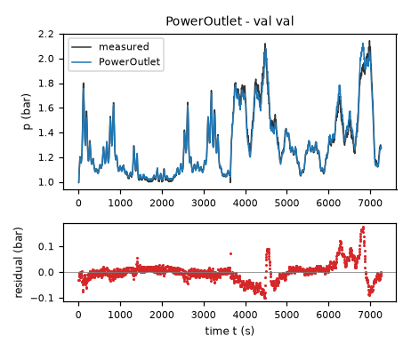
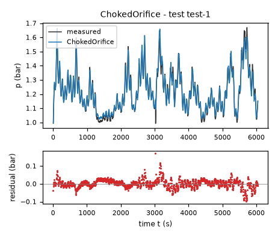
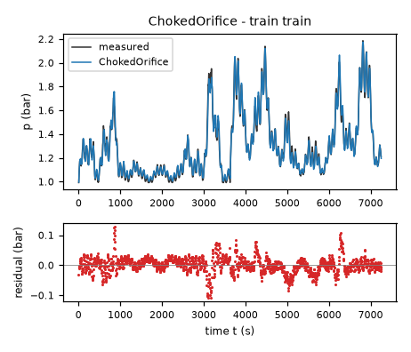
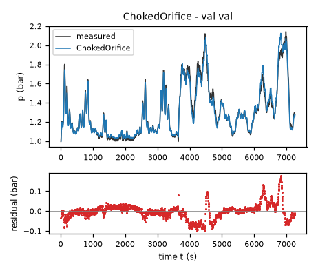
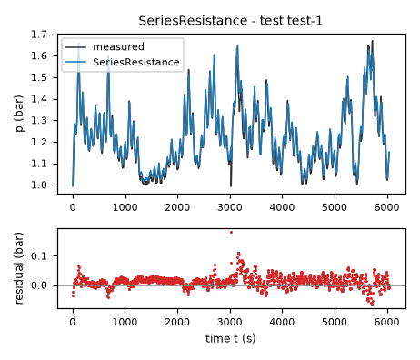
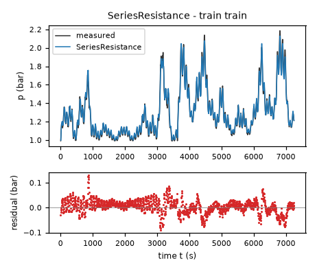
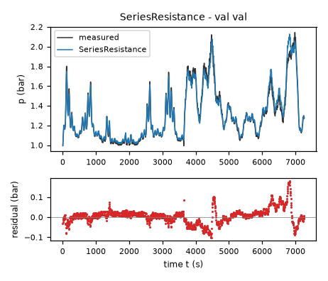
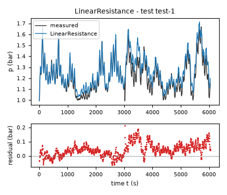
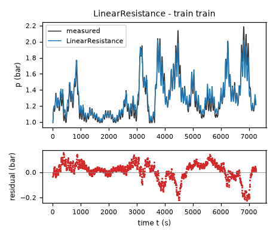
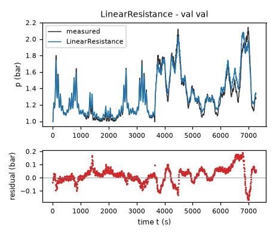

Headspace air pressure of an aerated fermentation tank – run 3 of 5
Generated: 2026-10-08 14:03 UTC
Finished by the agent after 28 turns, 774 s of execution time and 1.53 USD. 4 models delivered, 4 evaluated.
1 Models
| Model | Fitted parameters | Training error of p (bar) | Validation error (bar) | Test error of p (bar) | |
|---|---|---|---|---|---|
| PowerOutlet | 6 | 0.02479 | 0.03751 | 0.02285 | recommended by the agent lowest test error |
| ChokedOrifice | 5 | 0.02714 | 0.03871 | 0.02465 | |
| SeriesResistance | 5 | 0.02779 | 0.03892 | 0.02513 | |
| LinearResistance | 4 | 0.06943 | 0.06092 | 0.06248 |
The models are listed in the agent's order. Errors: root mean squared error between simulated and measured p, in bar. Training data: 1 trajectory of 1452 samples (1451 scored samples). Test data, which the agent cannot access: 1 trajectory of 1210 samples (1209 scored samples). A simulation error grows with the length of the trajectory, and the training and the test trajectories differ in length, so the two errors are not directly comparable. The agent recommends a model from the training data. The model with the lowest test error is found with the test data, in hindsight, among the 4 models of this run; the agent could not make this choice.
PowerOutlet combines the lowest final pooled pressure-rollout error among these atmosphere-anchored candidates with a finite near-equilibrium slope and exactly atmospheric zero-flow equilibrium. Its final RMSE is 0.024786824 bar on data/train.csv and 0.037505993 bar on data/val.csv; these are in-sample after pooled refitting, not test results. The compressible candidate has the better validation-file suffix result but the worse final pooled fit and assumes ideal nozzle behavior not established by the data. The series model is a more directly interpretable alternative with slightly worse pressure accuracy. The linear candidate is retained only as a transparent small-overpressure baseline. Selection also considered physical monotonicity in the pressurized domain and the required five-second RK4 stability, not derivative error alone.a = 0.001226 bar/(s*(l/min)) (fitted), c = 0.1939 1/s (fitted), m = 1.603 (fitted), k = 0.393 (fitted), patm = 1 bar (fixed), vfull = 100 % (fixed), pref = 1 bar (fixed), eps = 0.04005 bar (fitted), nu = 0.5404 (fitted)p: 0.02479 bar · validation error: 0.03751 bar · test error: 0.02285 barEquations as written in the model file
dp = a*flow-c*(Max(0, Min(1, 1-valve/vfull))/(Max(0, Min(1, 1-valve/vfull))+k))**m*(p-patm)*(((p-patm)**2+eps**2)/pref**2)**((nu-1)/2)
Equations with the values substituted
Every parameter is replaced by its value with 4 significant digits.
Parameters and estimation
| Name | Value | Unit | Type | Description |
|---|---|---|---|---|
a | 0.00122608 | bar/(s*(l/min)) | fitted | Positive inlet mass-flow-to-pressure conversion gain, fitted jointly with the other free parameters by the pressure-rollout least-squares stages described in estimation. |
c | 0.193893 | 1/s | fitted | Positive outlet pressure-rate scale, fitted jointly by the pressure-rollout criterion. Its units depend on the explicitly normalized outlet law. |
m | 1.6032 | - | fitted | Curvature exponent of the effective monotone valve conductance, fitted jointly by the pressure-rollout criterion. |
k | 0.393033 | - | fitted | Opening scale of the saturating valve characteristic, fitted jointly by the pressure-rollout criterion. |
patm | 1 | bar | fixed | Approximate absolute atmospheric equilibrium from TASK.md; fixed rather than using an empirical intercept so that zero-inlet equilibrium remains exactly atmospheric. |
vfull | 100 | % | fixed | Full closure is defined by TASK.md as percent; used to normalize and clip the opening. |
pref | 1 | bar | fixed | Reference pressure unit, one bar, used for dimensional consistency of a continuously fitted pressure exponent. |
eps | 0.0400523 | bar | fitted | Positive pressure-drop regularization scale, fitted jointly; gives a finite slope at atmospheric pressure. |
nu | 0.540409 | - | fitted | Empirical pressure-drop exponent, jointly fitted between the specified sublinear and linear limits; not claimed to uniquely identify a flow regime. |
- Criterion minimized
Sum of squared free-running pressure errors in bar squared, excluding the initial row of each simulated segment. This matches the scored state and discourages long-horizon drift; the filtered
dpcolumn is not a final fitting target. A one-sided residual with weight100bar*s penalizes a maximum open-valve relaxation slope above0.5per second; the final fit is essentially at that boundary.- Data
Final fit: all
1452rows ofdata/train.csvand all1454rows ofdata/val.csv, treated as separate trajectories. Earlier selection fit: first1000rows of each file; later rows were excluded at that stage to permit independently initialized contiguous-suffix checks. The validation file was deliberately allowed into final estimation after structure comparison to use both available experiments. For this candidate, final full-trajectory RK4 pressure RMSE was0.024786824bar ondata/train.csvand0.037505993bar ondata/val.csv. Prefix-fitted, independently initialized suffix RMSE was0.022030271bar on training-file rows1000:1452(zero-based) and0.061874437bar on validation-file rows1000:1454(zero-based). The maximum full-opening pressure relaxation slope of this fitted law is0.50001416per second.- Method
Bound-constrained nonlinear least squares with the trust-region reflective algorithm,
scipy.optimize.least_squares, using finite-difference Jacobians andx_scale = "jac". This method accommodates nonlinear constitutive parameters and sign constraints; direct ordinary least squares would not minimize pressure-rollout error. Deterministic warm starting used the preceding physically matched fits, with starting values bar/(s*(l/min)), 1/s, dimensionless, dimensionless, bar, dimensionless. These are numerical starting points taken frompooled_fits.jsonorstable_fits.json, not fixed final coefficients. All free parameters of this candidate were fitted together first to both independent trajectory prefixes, then jointly refitted to both full trajectories, starting at that prefix solution. The prefix stage used 45 objective evaluations and the full stage used 18 objective evaluations as reported by SciPy; all stages used at most240evaluations, , and . No random search or stochastic sampling was used, so no seed applies. Bounds and every starting value are recorded inatmospheric_fits.jsonand implemented in the reproduction script. Each simulation uses classical RK4 with a step of5s, the current row inputs held constant, and only the segment first pressure as an initial condition; later measured pressures never reset the simulation.- Script
fit_atmospheric.py
The agent's explanation
A one-state grey-box isothermal gas mass-balance model: the inlet term increases stored gas mass and the outlet term removes it. Only effective gains, rather than temperature and volume separately, are identifiable. The ideal-gas storage balance is assumed, not inferred from these data. Grey-box identification reference: Ljung, System Identification: Theory for the User, second edition (1999), cited from memory and not source-checked. The outlet is a regularized signed power-law pressure-flow constitutive relation. It is an empirical interpolation between sublinear orifice-like and linear resistance behavior, rather than an exact compressible-flow formula.
p is absolute headspace pressure in bar; valve is outlet closure in percent; flow is the logged inlet flow in l/min; dp is the modeled pressure derivative in bar/s. a is the fitted positive inlet conversion gain. is inlet pressurization. bar is the fixed approximate atmospheric pressure, not a measured atmospheric calibration. percent is the declared full-closure position. The clipped opening is dimensionless. k is a positive dimensionless opening scale and m a positive dimensionless curvature exponent. The monotone saturating characteristic represents an effective valve conductance, including the outlet plumbing; it is an empirical calibration law, not a measured geometric area. Clipping prevents unphysical conductance when an input is outside its declared range. bar is the reference pressure unit. eps is the positive regularization pressure and nu the dimensionless fitted pressure exponent. The outlet function has a finite linear slope near atmospheric pressure and a signed power-law dependence at larger departures. c has units inverse seconds because this function has units bar. The sublinear exponent describes mathematical curvature; it is not independent evidence of a particular valve-flow regime.
Physical reasoning supplied the one-state gas inventory balance, a positive term linear in inlet flow, atmospheric pressure as zero outlet driving pressure, and zero outlet conductance at full closure. A deterministic manual structure comparison, not symbolic regression, supplied the saturating opening law. Derivative-target nonlinear least-squares fits initialized the pressure-rollout fits; valve power, exponential, logistic, saturating and series-restriction characteristics were compared. Saturating conductance was retained because it improved pressure prediction without a high-dimensional calibration curve. The regularized square-root and series-resistance fits left pressure- and closure-dependent residuals. A fitted pressure exponent was tried to allow the data to choose curvature instead of fixing it at a square root. This was a manual constitutive extension, not an automated symbolic search. Flow-quadratic extensions collapsed toward zero gain, and a monotone valve calibration curve did not reliably improve held-out suffix predictions, so neither was retained. The equilibrium was fixed at atmospheric pressure and a slope penalty was added for numerical safety.
No measured headspace temperature, independently calibrated atmospheric pressure, valve geometry, or standard-flow reference conditions were available. Therefore fitted gains do not separately determine tank volume, temperature, or discharge area. The one-state structure omits bubble residence time, controller lag, valve hysteresis, and sensor dynamics. Both trajectories were used in the final fit, so full-trajectory errors are in-sample diagnostics, not test scores. The suffix checks were not used for parameter estimation at that stage, but were inspected during structure selection, so they are not untouched confirmatory tests. At very large pressure departures, negative absolute pressures, altered water level, or different hardware the model is not established. The data do not cover perfectly sealed operation, exactly zero flow at steady state, or all combinations of pressure and valve opening. The exponent and regularization are phenomenological, and can compensate for unmodeled valve characteristics or filtering. They should not be extrapolated to sonic choking or large changes of pressure or temperature. R1: the flow derivative is , so increasing inlet flow always increases dp. R2: on the intended pressurized operating domain , closing the valve reduces outlet conductance and therefore cannot reduce dp. Below atmospheric pressure, ambient backflow restores pressure; closing the valve then reduces that restoration, so R2 cannot hold globally there for this bidirectional-flow model. This is an explicit qualification, not a claimed global monotonicity guarantee. R3: with and , the unique equilibrium is exactly p = patm = 1 bar. R4: for these same inputs, dp has the opposite sign to , giving continuous-time relaxation from either side. R5: at , outlet conductance is zero and for nonnegative supplied flow. No leakage at full closure is assumed; none is identified from the logged range.
Physical requirements
| Requirement | Statement | Outcome | Detail |
|---|---|---|---|
| R1 | Monotonicity with respect to inlet flow. At a fixed pressure and valve position, increasing the inlet air flow rate cannot decrease the pressure derivative. | assessed by the human | stated in natural language: the harness does not assess it; the human assesses it, and the agent's assertion alone does not count as verification |
| R2 | Monotonicity with respect to valve closure. At a fixed pressure and inlet flow rate, closing the outlet valve further cannot decrease the pressure derivative. | assessed by the human | stated in natural language: the harness does not assess it; the human assesses it, and the agent's assertion alone does not count as verification |
| R3 | Zero-flow equilibrium. With zero inlet flow and an open outlet valve, atmospheric pressure (approximately 1 bar) is the pressure equilibrium. | assessed by the human | stated in natural language: the harness does not assess it; the human assesses it, and the agent's assertion alone does not count as verification |
| R4 | Pressure relaxation. With zero inlet flow and an open outlet valve, pressure tends toward atmospheric pressure. | assessed by the human | stated in natural language: the harness does not assess it; the human assesses it, and the agent's assertion alone does not count as verification |
| R5 | Fully closed valve. For a perfectly sealed tank with a fully closed outlet valve, the pressure cannot decrease when air is supplied. | assessed by the human | stated in natural language: the harness does not assess it; the human assesses it, and the agent's assertion alone does not count as verification |
Plots of simulated and measured p, and errors per trajectory

| Data | Trajectory | Scored samples | RMSE | NRMSE | R² | Failure |
|---|---|---|---|---|---|---|
| training data | train | 1451 of 1451 | 0.02479 | 0.09506 | 0.991 | none |
| validation data | val | 1453 of 1453 | 0.03751 | 0.1429 | 0.9796 | none |
| test data | test-1 | 1209 of 1209 | 0.02285 | 0.164 | 0.9731 | none |
RMSE of p in bar; NRMSE = RMSE / σ and R² = 1 − SSE / Σ(y[k] − μ)², with μ and σ the mean and the population standard deviation of the measured output on the scored samples.
a = 0.001292 bar/(s*(l/min)) (fitted), c = 0.1701 1/s (fitted), m = 1.253 (fitted), k = 0.7108 (fitted), patm = 1 bar (fixed), vfull = 100 % (fixed), eps = 0.05277 bar (fitted), gamma = 1.4 (fixed), rcrit = 0.5283 (tied), pfloor = 0.01 bar (fixed)p: 0.02714 bar · validation error: 0.03871 bar · test error: 0.02465 barEquations as written in the model file
dp = a*flow-c*(Max(0, Min(1, 1-valve/vfull))/(Max(0, Min(1, 1-valve/vfull))+k))**m*Max(p,patm)*sqrt(2*gamma/(gamma-1)*Max(Max(Max(Min(p,patm),pfloor)/Max(p,patm),rcrit)**(2/gamma)-Max(Max(Min(p,patm),pfloor)/Max(p,patm),rcrit)**((gamma+1)/gamma),0))*(p-patm)/sqrt((p-patm)**2+eps**2)
Equations with the values substituted
Every parameter is replaced by its value with 4 significant digits.
Parameters and estimation
| Name | Value | Unit | Type | Description |
|---|---|---|---|---|
a | 0.0012922 | bar/(s*(l/min)) | fitted | Positive inlet mass-flow-to-pressure conversion gain, fitted jointly with the other free parameters by the pressure-rollout least-squares stages described in estimation. |
c | 0.170147 | 1/s | fitted | Positive outlet pressure-rate scale, fitted jointly by the pressure-rollout criterion. Its units depend on the explicitly normalized outlet law. |
m | 1.25276 | - | fitted | Curvature exponent of the effective monotone valve conductance, fitted jointly by the pressure-rollout criterion. |
k | 0.710806 | - | fitted | Opening scale of the saturating valve characteristic, fitted jointly by the pressure-rollout criterion. |
patm | 1 | bar | fixed | Approximate absolute atmospheric equilibrium from TASK.md; fixed rather than using an empirical intercept so that zero-inlet equilibrium remains exactly atmospheric. |
vfull | 100 | % | fixed | Full closure is defined by TASK.md as percent; used to normalize and clip the opening. |
eps | 0.0527678 | bar | fitted | Near-equilibrium pressure smoothing scale, jointly fitted; damps the singular ideal-orifice slope. |
gamma | 1.4 | - | fixed | Assumed ratio of specific heats for ideal air near room temperature; the standard diatomic-gas value, not estimated from this experiment. |
rcrit | 0.528282 | - | tied ((2/(gamma+1))**(gamma/(gamma-1))) | Critical downstream/upstream pressure ratio from the assumed isentropic nozzle law. |
pfloor | 0.01 | bar | fixed | Positive lower downstream pressure floor chosen only to avoid invalid fractional pressure-ratio powers outside physical positive-pressure operation; it is inactive in the observed pressure range. |
- Criterion minimized
Sum of squared free-running pressure errors in bar squared, excluding the initial row of each simulated segment. This matches the scored state and discourages long-horizon drift; the filtered
dpcolumn is not a final fitting target. A vector of one-sided slope residuals, each with weight100bar*s, penalizes open-valve relaxation slopes above0.48per second on a pressure grid around atmospheric pressure. The grid has120points below and180points above atmospheric pressure, as specified infit_stable.py; it is a numerical safety check, not extra measured data.- Data
Final fit: all
1452rows ofdata/train.csvand all1454rows ofdata/val.csv, treated as separate trajectories. Earlier selection fit: first1000rows of each file; later rows were excluded at that stage to permit independently initialized contiguous-suffix checks. The validation file was deliberately allowed into final estimation after structure comparison to use both available experiments. For this candidate, final full-trajectory RK4 pressure RMSE was0.027142038bar ondata/train.csvand0.038713966bar ondata/val.csv. Prefix-fitted, independently initialized suffix RMSE was0.029035375bar on training-file rows1000:1452(zero-based) and0.05780362bar on validation-file rows1000:1454(zero-based).- Method
Bound-constrained nonlinear least squares with the trust-region reflective algorithm,
scipy.optimize.least_squares, using finite-difference Jacobians andx_scale = "jac". This method accommodates nonlinear constitutive parameters and sign constraints; direct ordinary least squares would not minimize pressure-rollout error. Deterministic warm starting used the preceding physically matched fits, with starting values bar/(s*(l/min)), 1/s, dimensionless, dimensionless, bar. These are numerical starting points taken frompooled_fits.jsonorstable_fits.json, not fixed final coefficients. All free parameters of this candidate were fitted together first to both independent trajectory prefixes, then jointly refitted to both full trajectories, starting at that prefix solution. The prefix stage used 20 objective evaluations and the full stage used 27 objective evaluations as reported by SciPy; all stages used at most240evaluations, , and . No random search or stochastic sampling was used, so no seed applies. Bounds and every starting value are recorded inatmospheric_fits.jsonand implemented in the reproduction script. Each simulation uses classical RK4 with a step of5s, the current row inputs held constant, and only the segment first pressure as an initial condition; later measured pressures never reset the simulation.rcritis computed from fixedgamma, not fitted.- Script
fit_atmospheric.py
The agent's explanation
A one-state grey-box isothermal gas mass-balance model: the inlet term increases stored gas mass and the outlet term removes it. Only effective gains, rather than temperature and volume separately, are identifiable. The ideal-gas storage balance is assumed, not inferred from these data. Grey-box identification reference: Ljung, System Identification: Theory for the User, second edition (1999), cited from memory and not source-checked. The outlet uses the standard isentropic compressible-orifice pressure-ratio function with sonic limiting, multiplied by a smooth near-equilibrium correction. Reference: NASA Glenn Research Center, Mass Flow Rate Equations, cited from memory; attempted web retrieval returned no source content, so it was not verified during this run.
p is absolute headspace pressure in bar; valve is outlet closure in percent; flow is the logged inlet flow in l/min; dp is the modeled pressure derivative in bar/s. a is the fitted positive inlet conversion gain. is inlet pressurization. bar is the fixed approximate atmospheric pressure, not a measured atmospheric calibration. percent is the declared full-closure position. The clipped opening is dimensionless. k is a positive dimensionless opening scale and m a positive dimensionless curvature exponent. The monotone saturating characteristic represents an effective valve conductance, including the outlet plumbing; it is an empirical calibration law, not a measured geometric area. Clipping prevents unphysical conductance when an input is outside its declared range. is the assumed ideal-air heat-capacity ratio. is the dimensionless critical pressure ratio. is upstream absolute pressure and is downstream absolute pressure. The pressure ratio is clipped below at rcrit to represent choking. The ideal compressible outlet factor is multiplied by to give its direction and suppress its singular near-equilibrium slope. This correction is empirical regularization, not a derived isentropic-flow property. c has units inverse seconds and absorbs effective discharge area and storage capacity. bar is a numerical domain guard, not a measured pressure. The complete outlet pressure factor is .
Physical reasoning supplied the one-state gas inventory balance, a positive term linear in inlet flow, atmospheric pressure as zero outlet driving pressure, and zero outlet conductance at full closure. A deterministic manual structure comparison, not symbolic regression, supplied the saturating opening law. Derivative-target nonlinear least-squares fits initialized the pressure-rollout fits; valve power, exponential, logistic, saturating and series-restriction characteristics were compared. Saturating conductance was retained because it improved pressure prediction without a high-dimensional calibration curve. Compressible outlet flow was listed before fitting because measured pressure approaches twice atmospheric pressure. A critical pressure-ratio cap came from gas-flow physics rather than a fitted threshold. The smoothing factor was introduced to make an ideal orifice usable near atmospheric pressure. A numerical slope penalty was added after unconstrained parameters gave excessive low-pressure stiffness for the prescribed integration step.
No measured headspace temperature, independently calibrated atmospheric pressure, valve geometry, or standard-flow reference conditions were available. Therefore fitted gains do not separately determine tank volume, temperature, or discharge area. The one-state structure omits bubble residence time, controller lag, valve hysteresis, and sensor dynamics. Both trajectories were used in the final fit, so full-trajectory errors are in-sample diagnostics, not test scores. The suffix checks were not used for parameter estimation at that stage, but were inspected during structure selection, so they are not untouched confirmatory tests. At very large pressure departures, negative absolute pressures, altered water level, or different hardware the model is not established. The data do not cover perfectly sealed operation, exactly zero flow at steady state, or all combinations of pressure and valve opening. The outlet is not known to be an ideal nozzle. Heat exchange, moisture, distributed line loss, and valve geometry may change the ideal pressure-ratio relation. Data close to the sonic threshold do not establish choking independently. The numerical slope penalty samples a finite grid and is not a global stability proof. R1: the flow derivative is , so increasing inlet flow always increases dp. R2: on the intended pressurized operating domain , closing the valve reduces outlet conductance and therefore cannot reduce dp. Below atmospheric pressure, ambient backflow restores pressure; closing the valve then reduces that restoration, so R2 cannot hold globally there for this bidirectional-flow model. This is an explicit qualification, not a claimed global monotonicity guarantee. R3: with and , the unique equilibrium is exactly p = patm = 1 bar. R4: for these same inputs, dp has the opposite sign to , giving continuous-time relaxation from either side. R5: at , outlet conductance is zero and for nonnegative supplied flow. No leakage at full closure is assumed; none is identified from the logged range.
Physical requirements
| Requirement | Statement | Outcome | Detail |
|---|---|---|---|
| R1 | Monotonicity with respect to inlet flow. At a fixed pressure and valve position, increasing the inlet air flow rate cannot decrease the pressure derivative. | assessed by the human | stated in natural language: the harness does not assess it; the human assesses it, and the agent's assertion alone does not count as verification |
| R2 | Monotonicity with respect to valve closure. At a fixed pressure and inlet flow rate, closing the outlet valve further cannot decrease the pressure derivative. | assessed by the human | stated in natural language: the harness does not assess it; the human assesses it, and the agent's assertion alone does not count as verification |
| R3 | Zero-flow equilibrium. With zero inlet flow and an open outlet valve, atmospheric pressure (approximately 1 bar) is the pressure equilibrium. | assessed by the human | stated in natural language: the harness does not assess it; the human assesses it, and the agent's assertion alone does not count as verification |
| R4 | Pressure relaxation. With zero inlet flow and an open outlet valve, pressure tends toward atmospheric pressure. | assessed by the human | stated in natural language: the harness does not assess it; the human assesses it, and the agent's assertion alone does not count as verification |
| R5 | Fully closed valve. For a perfectly sealed tank with a fully closed outlet valve, the pressure cannot decrease when air is supplied. | assessed by the human | stated in natural language: the harness does not assess it; the human assesses it, and the agent's assertion alone does not count as verification |
Plots of simulated and measured p, and errors per trajectory



| Data | Trajectory | Scored samples | RMSE | NRMSE | R² | Failure |
|---|---|---|---|---|---|---|
| training data | train | 1451 of 1451 | 0.02714 | 0.1041 | 0.9892 | none |
| validation data | val | 1453 of 1453 | 0.03871 | 0.1475 | 0.9783 | none |
| test data | test-1 | 1209 of 1209 | 0.02465 | 0.1769 | 0.9687 | none |
RMSE of p in bar; NRMSE = RMSE / σ and R² = 1 − SSE / Σ(y[k] − μ)², with μ and σ the mean and the population standard deviation of the measured output on the scored samples.
a = 0.001123 bar/(s*(l/min)) (fitted), c = 0.1978 bar/s (fitted), m = 2.05 (fitted), k = 0.2611 (fitted), patm = 1 bar (fixed), vfull = 100 % (fixed), pref = 1 bar (fixed), lam = 0.5 1/s (fitted), eps = 0.2458 (tied)p: 0.02779 bar · validation error: 0.03892 bar · test error: 0.02513 barEquations as written in the model file
dp = a*flow-c*(Max(0, Min(1, 1-valve/vfull))/(Max(0, Min(1, 1-valve/vfull))+k))**m*2*((p-patm)/pref)/(eps+sqrt(eps**2+4*Abs((p-patm)/pref)))
Equations with the values substituted
Every parameter is replaced by its value with 4 significant digits.
Parameters and estimation
| Name | Value | Unit | Type | Description |
|---|---|---|---|---|
a | 0.00112251 | bar/(s*(l/min)) | fitted | Positive inlet mass-flow-to-pressure conversion gain, fitted jointly with the other free parameters by the pressure-rollout least-squares stages described in estimation. |
c | 0.197758 | bar/s | fitted | Positive outlet pressure-rate scale, fitted jointly by the pressure-rollout criterion. Its units depend on the explicitly normalized outlet law. |
m | 2.04994 | - | fitted | Curvature exponent of the effective monotone valve conductance, fitted jointly by the pressure-rollout criterion. |
k | 0.261116 | - | fitted | Opening scale of the saturating valve characteristic, fitted jointly by the pressure-rollout criterion. |
patm | 1 | bar | fixed | Approximate absolute atmospheric equilibrium from TASK.md; fixed rather than using an empirical intercept so that zero-inlet equilibrium remains exactly atmospheric. |
vfull | 100 | % | fixed | Full closure is defined by TASK.md as percent; used to normalize and clip the opening. |
pref | 1 | bar | fixed | Reference pressure unit, one bar; makes normalized pressure drop dimensionless without changing numerical values. |
lam | 0.5 | 1/s | fitted | Maximum open-valve relaxation slope, jointly fitted with an upper bound of per second to keep the required five-second RK4 step inside its negative-real-axis stability region. |
eps | 0.245823 | - | tied (c*(1/(1+k))**m/(pref*lam)) | Dimensionless linear-resistance scale. Tied so that the maximum relaxation slope at atmospheric pressure and full opening is lam. |
- Criterion minimized
Sum of squared free-running pressure errors in bar squared, excluding the initial row of each simulated segment. This matches the scored state and discourages long-horizon drift; the filtered
dpcolumn is not a final fitting target.- Data
Final fit: all
1452rows ofdata/train.csvand all1454rows ofdata/val.csv, treated as separate trajectories. Earlier selection fit: first1000rows of each file; later rows were excluded at that stage to permit independently initialized contiguous-suffix checks. The validation file was deliberately allowed into final estimation after structure comparison to use both available experiments. For this candidate, final full-trajectory RK4 pressure RMSE was0.02778612bar ondata/train.csvand0.038916827bar ondata/val.csv. Prefix-fitted, independently initialized suffix RMSE was0.025212796bar on training-file rows1000:1452(zero-based) and0.06346092bar on validation-file rows1000:1454(zero-based). The maximum full-opening pressure relaxation slope of this fitted law is0.5per second.- Method
Bound-constrained nonlinear least squares with the trust-region reflective algorithm,
scipy.optimize.least_squares, using finite-difference Jacobians andx_scale = "jac". This method accommodates nonlinear constitutive parameters and sign constraints; direct ordinary least squares would not minimize pressure-rollout error. Deterministic warm starting used the preceding physically matched fits, with starting values bar/(s*(l/min)), bar/s, dimensionless, dimensionless, 1/s. These are numerical starting points taken frompooled_fits.jsonorstable_fits.json, not fixed final coefficients. All free parameters of this candidate were fitted together first to both independent trajectory prefixes, then jointly refitted to both full trajectories, starting at that prefix solution. The prefix stage used 13 objective evaluations and the full stage used 13 objective evaluations as reported by SciPy; all stages used at most240evaluations, , and . No random search or stochastic sampling was used, so no seed applies. Bounds and every starting value are recorded inatmospheric_fits.jsonand implemented in the reproduction script. Each simulation uses classical RK4 with a step of5s, the current row inputs held constant, and only the segment first pressure as an initial condition; later measured pressures never reset the simulation.epsis computed from the fittedc,m,k, andlam, not estimated independently.- Script
fit_atmospheric.py
The agent's explanation
A one-state grey-box isothermal gas mass-balance model: the inlet term increases stored gas mass and the outlet term removes it. Only effective gains, rather than temperature and volume separately, are identifiable. The ideal-gas storage balance is assumed, not inferred from these data. Grey-box identification reference: Ljung, System Identification: Theory for the User, second edition (1999), cited from memory and not source-checked. The outlet law is the signed inverse of a linear-plus-quadratic pressure-flow resistance (a Darcy-Forchheimer-type constitutive analogy; no porous medium is claimed). The law continuously joins viscous-like linear flow and inertia-dominated square-root flow.
p is absolute headspace pressure in bar; valve is outlet closure in percent; flow is the logged inlet flow in l/min; dp is the modeled pressure derivative in bar/s. a is the fitted positive inlet conversion gain. is inlet pressurization. bar is the fixed approximate atmospheric pressure, not a measured atmospheric calibration. percent is the declared full-closure position. The clipped opening is dimensionless. k is a positive dimensionless opening scale and m a positive dimensionless curvature exponent. The monotone saturating characteristic represents an effective valve conductance, including the outlet plumbing; it is an empirical calibration law, not a measured geometric area. Clipping prevents unphysical conductance when an input is outside its declared range. bar normalizes the pressure drop. eps is the dimensionless linear-resistance scale. The normalized outlet function solves a linear-plus-quadratic resistance relation. Its sign allows ambient backflow below atmospheric pressure. c has units bar/s. lam is the fitted limiting open-valve relaxation rate; ties the resistance scale to that rate.
Physical reasoning supplied the one-state gas inventory balance, a positive term linear in inlet flow, atmospheric pressure as zero outlet driving pressure, and zero outlet conductance at full closure. A deterministic manual structure comparison, not symbolic regression, supplied the saturating opening law. Derivative-target nonlinear least-squares fits initialized the pressure-rollout fits; valve power, exponential, logistic, saturating and series-restriction characteristics were compared. Saturating conductance was retained because it improved pressure prediction without a high-dimensional calibration curve. The raw signed square-root law was regularized to avoid a singular slope at atmospheric pressure. Residuals favored a nonlinear outlet pressure law, and a linear-plus-quadratic resistance inversion provided a physically defensible smooth transition. An unconstrained series fit was too stiff near atmospheric pressure for the prescribed RK4 step, motivating the limiting-slope parameterization. The equilibrium was finally fixed at atmospheric pressure instead of estimating a pressure offset.
No measured headspace temperature, independently calibrated atmospheric pressure, valve geometry, or standard-flow reference conditions were available. Therefore fitted gains do not separately determine tank volume, temperature, or discharge area. The one-state structure omits bubble residence time, controller lag, valve hysteresis, and sensor dynamics. Both trajectories were used in the final fit, so full-trajectory errors are in-sample diagnostics, not test scores. The suffix checks were not used for parameter estimation at that stage, but were inspected during structure selection, so they are not untouched confirmatory tests. At very large pressure departures, negative absolute pressures, altered water level, or different hardware the model is not established. The data do not cover perfectly sealed operation, exactly zero flow at steady state, or all combinations of pressure and valve opening. A single valve multiplier assumes separability of valve conductance and pressure dependence. It cannot represent pressure-dependent valve deformation or sonic choking. The stability constraint is active, so the low-pressure time constant is partly imposed by numerical admissibility rather than uniquely measured. R1: the flow derivative is , so increasing inlet flow always increases dp. R2: on the intended pressurized operating domain , closing the valve reduces outlet conductance and therefore cannot reduce dp. Below atmospheric pressure, ambient backflow restores pressure; closing the valve then reduces that restoration, so R2 cannot hold globally there for this bidirectional-flow model. This is an explicit qualification, not a claimed global monotonicity guarantee. R3: with and , the unique equilibrium is exactly p = patm = 1 bar. R4: for these same inputs, dp has the opposite sign to , giving continuous-time relaxation from either side. R5: at , outlet conductance is zero and for nonnegative supplied flow. No leakage at full closure is assumed; none is identified from the logged range.
Physical requirements
| Requirement | Statement | Outcome | Detail |
|---|---|---|---|
| R1 | Monotonicity with respect to inlet flow. At a fixed pressure and valve position, increasing the inlet air flow rate cannot decrease the pressure derivative. | assessed by the human | stated in natural language: the harness does not assess it; the human assesses it, and the agent's assertion alone does not count as verification |
| R2 | Monotonicity with respect to valve closure. At a fixed pressure and inlet flow rate, closing the outlet valve further cannot decrease the pressure derivative. | assessed by the human | stated in natural language: the harness does not assess it; the human assesses it, and the agent's assertion alone does not count as verification |
| R3 | Zero-flow equilibrium. With zero inlet flow and an open outlet valve, atmospheric pressure (approximately 1 bar) is the pressure equilibrium. | assessed by the human | stated in natural language: the harness does not assess it; the human assesses it, and the agent's assertion alone does not count as verification |
| R4 | Pressure relaxation. With zero inlet flow and an open outlet valve, pressure tends toward atmospheric pressure. | assessed by the human | stated in natural language: the harness does not assess it; the human assesses it, and the agent's assertion alone does not count as verification |
| R5 | Fully closed valve. For a perfectly sealed tank with a fully closed outlet valve, the pressure cannot decrease when air is supplied. | assessed by the human | stated in natural language: the harness does not assess it; the human assesses it, and the agent's assertion alone does not count as verification |
Plots of simulated and measured p, and errors per trajectory



| Data | Trajectory | Scored samples | RMSE | NRMSE | R² | Failure |
|---|---|---|---|---|---|---|
| training data | train | 1451 of 1451 | 0.02779 | 0.1066 | 0.9886 | none |
| validation data | val | 1453 of 1453 | 0.03892 | 0.1482 | 0.978 | none |
| test data | test-1 | 1209 of 1209 | 0.02513 | 0.1803 | 0.9675 | none |
RMSE of p in bar; NRMSE = RMSE / σ and R² = 1 − SSE / Σ(y[k] − μ)², with μ and σ the mean and the population standard deviation of the measured output on the scored samples.
a = 0.0008638 bar/(s*(l/min)) (fitted), c = 0.6656 1/s (fitted), m = 2.772 (fitted), k = 0.4168 (fitted), patm = 1 bar (fixed), vfull = 100 % (fixed)p: 0.06943 bar · validation error: 0.06092 bar · test error: 0.06248 barEquations as written in the model file
dp = a*flow-c*(Max(0, Min(1, 1-valve/vfull))/(Max(0, Min(1, 1-valve/vfull))+k))**m*(p-patm)
Equations with the values substituted
Every parameter is replaced by its value with 4 significant digits.
Parameters and estimation
| Name | Value | Unit | Type | Description |
|---|---|---|---|---|
a | 0.00086381 | bar/(s*(l/min)) | fitted | Positive inlet mass-flow-to-pressure conversion gain, fitted jointly with the other free parameters by the pressure-rollout least-squares stages described in estimation. |
c | 0.66557 | 1/s | fitted | Positive outlet pressure-rate scale, fitted jointly by the pressure-rollout criterion. Its units depend on the explicitly normalized outlet law. |
m | 2.77245 | - | fitted | Curvature exponent of the effective monotone valve conductance, fitted jointly by the pressure-rollout criterion. |
k | 0.41679 | - | fitted | Opening scale of the saturating valve characteristic, fitted jointly by the pressure-rollout criterion. |
patm | 1 | bar | fixed | Approximate absolute atmospheric equilibrium from TASK.md; fixed rather than using an empirical intercept so that zero-inlet equilibrium remains exactly atmospheric. |
vfull | 100 | % | fixed | Full closure is defined by TASK.md as percent; used to normalize and clip the opening. |
- Criterion minimized
Sum of squared free-running pressure errors in bar squared, excluding the initial row of each simulated segment. This matches the scored state and discourages long-horizon drift; the filtered
dpcolumn is not a final fitting target.- Data
Final fit: all
1452rows ofdata/train.csvand all1454rows ofdata/val.csv, treated as separate trajectories. Earlier selection fit: first1000rows of each file; later rows were excluded at that stage to permit independently initialized contiguous-suffix checks. The validation file was deliberately allowed into final estimation after structure comparison to use both available experiments. For this candidate, final full-trajectory RK4 pressure RMSE was0.06943435bar ondata/train.csvand0.060924916bar ondata/val.csv. Prefix-fitted, independently initialized suffix RMSE was0.082709068bar on training-file rows1000:1452(zero-based) and0.091471858bar on validation-file rows1000:1454(zero-based). The maximum full-opening pressure relaxation slope of this fitted law is0.25334189per second.- Method
Bound-constrained nonlinear least squares with the trust-region reflective algorithm,
scipy.optimize.least_squares, using finite-difference Jacobians andx_scale = "jac". This method accommodates nonlinear constitutive parameters and sign constraints; direct ordinary least squares would not minimize pressure-rollout error. Deterministic warm starting used the preceding physically matched fits, with starting values bar/(s*(l/min)), 1/s, dimensionless, dimensionless. These are numerical starting points taken frompooled_fits.jsonorstable_fits.json, not fixed final coefficients. All free parameters of this candidate were fitted together first to both independent trajectory prefixes, then jointly refitted to both full trajectories, starting at that prefix solution. The prefix stage used 52 objective evaluations and the full stage used 12 objective evaluations as reported by SciPy; all stages used at most240evaluations, , and . No random search or stochastic sampling was used, so no seed applies. Bounds and every starting value are recorded inatmospheric_fits.jsonand implemented in the reproduction script. Each simulation uses classical RK4 with a step of5s, the current row inputs held constant, and only the segment first pressure as an initial condition; later measured pressures never reset the simulation.- Script
fit_atmospheric.py
The agent's explanation
A one-state grey-box isothermal gas mass-balance model: the inlet term increases stored gas mass and the outlet term removes it. Only effective gains, rather than temperature and volume separately, are identifiable. The ideal-gas storage balance is assumed, not inferred from these data. Grey-box identification reference: Ljung, System Identification: Theory for the User, second edition (1999), cited from memory and not source-checked. The outlet is a linear pneumatic-resistance/Newtonian relaxation law, with input-dependent relaxation rate.
p is absolute headspace pressure in bar; valve is outlet closure in percent; flow is the logged inlet flow in l/min; dp is the modeled pressure derivative in bar/s. a is the fitted positive inlet conversion gain. is inlet pressurization. bar is the fixed approximate atmospheric pressure, not a measured atmospheric calibration. percent is the declared full-closure position. The clipped opening is dimensionless. k is a positive dimensionless opening scale and m a positive dimensionless curvature exponent. The monotone saturating characteristic represents an effective valve conductance, including the outlet plumbing; it is an empirical calibration law, not a measured geometric area. Clipping prevents unphysical conductance when an input is outside its declared range. The term is linear pressure-driven outlet relaxation. c has units of inverse seconds. This is a local small-pressure-departure resistance approximation.
Physical reasoning supplied the one-state gas inventory balance, a positive term linear in inlet flow, atmospheric pressure as zero outlet driving pressure, and zero outlet conductance at full closure. A deterministic manual structure comparison, not symbolic regression, supplied the saturating opening law. Derivative-target nonlinear least-squares fits initialized the pressure-rollout fits; valve power, exponential, logistic, saturating and series-restriction characteristics were compared. Saturating conductance was retained because it improved pressure prediction without a high-dimensional calibration curve. This was the baseline family stated before fitting. It was retained as an interpretable low-pressure reference, not because it matched the full data best; nonlinear outlet laws were substantially more accurate.
No measured headspace temperature, independently calibrated atmospheric pressure, valve geometry, or standard-flow reference conditions were available. Therefore fitted gains do not separately determine tank volume, temperature, or discharge area. The one-state structure omits bubble residence time, controller lag, valve hysteresis, and sensor dynamics. Both trajectories were used in the final fit, so full-trajectory errors are in-sample diagnostics, not test scores. The suffix checks were not used for parameter estimation at that stage, but were inspected during structure selection, so they are not untouched confirmatory tests. At very large pressure departures, negative absolute pressures, altered water level, or different hardware the model is not established. The data do not cover perfectly sealed operation, exactly zero flow at steady state, or all combinations of pressure and valve opening. The linear pressure-flow approximation is poor over the largest observed overpressures; its higher simulation error is evidence against using it as the default process model. R1: the flow derivative is , so increasing inlet flow always increases dp. R2: on the intended pressurized operating domain , closing the valve reduces outlet conductance and therefore cannot reduce dp. Below atmospheric pressure, ambient backflow restores pressure; closing the valve then reduces that restoration, so R2 cannot hold globally there for this bidirectional-flow model. This is an explicit qualification, not a claimed global monotonicity guarantee. R3: with and , the unique equilibrium is exactly p = patm = 1 bar. R4: for these same inputs, dp has the opposite sign to , giving continuous-time relaxation from either side. R5: at , outlet conductance is zero and for nonnegative supplied flow. No leakage at full closure is assumed; none is identified from the logged range.
Physical requirements
| Requirement | Statement | Outcome | Detail |
|---|---|---|---|
| R1 | Monotonicity with respect to inlet flow. At a fixed pressure and valve position, increasing the inlet air flow rate cannot decrease the pressure derivative. | assessed by the human | stated in natural language: the harness does not assess it; the human assesses it, and the agent's assertion alone does not count as verification |
| R2 | Monotonicity with respect to valve closure. At a fixed pressure and inlet flow rate, closing the outlet valve further cannot decrease the pressure derivative. | assessed by the human | stated in natural language: the harness does not assess it; the human assesses it, and the agent's assertion alone does not count as verification |
| R3 | Zero-flow equilibrium. With zero inlet flow and an open outlet valve, atmospheric pressure (approximately 1 bar) is the pressure equilibrium. | assessed by the human | stated in natural language: the harness does not assess it; the human assesses it, and the agent's assertion alone does not count as verification |
| R4 | Pressure relaxation. With zero inlet flow and an open outlet valve, pressure tends toward atmospheric pressure. | assessed by the human | stated in natural language: the harness does not assess it; the human assesses it, and the agent's assertion alone does not count as verification |
| R5 | Fully closed valve. For a perfectly sealed tank with a fully closed outlet valve, the pressure cannot decrease when air is supplied. | assessed by the human | stated in natural language: the harness does not assess it; the human assesses it, and the agent's assertion alone does not count as verification |
Plots of simulated and measured p, and errors per trajectory



| Data | Trajectory | Scored samples | RMSE | NRMSE | R² | Failure |
|---|---|---|---|---|---|---|
| training data | train | 1451 of 1451 | 0.06943 | 0.2663 | 0.9291 | none |
| validation data | val | 1453 of 1453 | 0.06092 | 0.2321 | 0.9461 | none |
| test data | test-1 | 1209 of 1209 | 0.06248 | 0.4484 | 0.799 | none |
RMSE of p in bar; NRMSE = RMSE / σ and R² = 1 − SSE / Σ(y[k] − μ)², with μ and σ the mean and the population standard deviation of the measured output on the scored samples.
2 Course of the run
The system prompt, TASK.md and FORMAT.md that the agent received are shown on the page of the experiment.
0:00Harness: opening message to the agent
10:13Read TASK.md0.01
5,474 input and 19 output tokens; 0.011 USD for this turn.
TASK.md
output as sent to the agent (5,833 characters, 46 lines)
[TASK.md: 5806 characters] # Task: Headspace air pressure of an aerated fermentation tank ## 1 System and intended use A small-scale 40-liter fermentation tank filled with approximately 25 liters of water, data recorded on the real rig. At the bottom of the tank, air is fed into the water at a flow rate controlled by a local mass-flow controller. The air collects in the headspace above the water level and leaves through an outlet valve at the top of the tank; the air pressure above the water level depends on the valve position. The valve position is the first input (`valve`), the air flow rate is the second input (`flow`), and the headspace air pressure `p` is the state and the measured output; `dp` is the sampled time derivative of `p`, a possible fitting target of dp = f(p, valve, flow). Sampling period T_s = 5 s. Each data file is one contiguous trajectory. The derivative column is a filtered numerical difference of p. Physical units: pressure in bar (10^5 Pa), valve in % closed (100% = fully closed), air flow rate in liters/min. Simulation of the pressure p. The model is integrated from the first sample of a held-out trajectory, with the recorded inputs valve and flow applied and no further corrections, and the simulated p is compared with the measured one. The model should give stable, accurate long-horizon simulation. The model is meant to be used as a physically interpretable process model, so its structure should be defensible from the physics, not only from the fit. ## 2 Data `data/train.csv` holds 1452 samples of training data: one trajectory of consecutive samples. `data/val.csv` holds 1454 samples of validation data: one trajectory of consecutive samples. Whether and how you use the validation data is your decision. Row k+1 of a trajectory is the sample that follows row k; different trajectories are separate experiments. The sampling period is T_s = 5 s. | Column | Role | Unit | Training range | Description | |---|---|---|---|---| | `p` | state, scored output | bar | not declared | headspace air pressure, simulated state and measured output | | `valve` | input | % closed | 0 to 100 | outlet valve position, first exogenous input | | `flow` | input | l/min | not declared | air flow rate controlled by the mass-flow controller, second exogenous input | | `dp` | sampled time derivative of `p` | bar/s | not declared | sampled time derivative of p (a filtered numerical difference); a possible fitting target, never simulated | ## 3 What you deliver A candidate is a continuous-time model of one closed-form expression, `dp`: the time derivative of the state `p` as a function of `p`, `valve` and `flow`. The column `dp` is a possible fitting target for the derivative of `p`; it is not an argument of the expressions. `FORMAT.md` states how an expression is written and what it may contain. Write one file per candidate, `models/<label>.json`; `FORMAT.md` describes the file and gives an example. Write also `models/pool.json`, which lists the labels of your candidates in the order in which they are to be evaluated. You can recommend one candidate that you consider the best-performing. `models/pool.json` then names that candidate and gives your reason. Run `python check_submission.py` to check your files: it prints every error with its location, so that you can correct it. At most 10 candidates are evaluated, in the order of `models/pool.json`. Consider various identification approaches, for example physically motivated structures, symbolic-regression search or sparse regression; before fitting, list the approaches and the model families you will try. Build the pool from structurally different model families, not from variations of one form. Examine the residuals of your best candidates and try structures that can represent what they show. Include only candidates you would defend as a model of the system. ## 4 Evaluation The harness, the software that runs this task, evaluates every candidate on test data that you cannot access. For each test trajectory it starts from the first logged state and integrates the expressions with the classical fourth-order Runge–Kutta method, one step per sampling period, with the logged inputs held constant between samples; a simulated state is never replaced by a later measurement. The score is the root mean squared error (RMSE) between simulated and logged `p`, in bar, over all test samples after the first of each trajectory. An evaluation fails when a value is not finite, when `p` leaves [-100, 100] bar, or when it takes longer than 60 s. ## 5 Physical requirements Requirements stated in words. A human assesses them; address each one in the discussion of every candidate to which it applies. - **R1**: Monotonicity with respect to inlet flow. At a fixed pressure and valve position, increasing the inlet air flow rate cannot decrease the pressure derivative. - **R2**: Monotonicity with respect to valve closure. At a fixed pressure and inlet flow rate, closing the outlet valve further cannot decrease the pressure derivative. - **R3**: Zero-flow equilibrium. With zero inlet flow and an open outlet valve, atmospheric pressure (approximately 1 bar) is the pressure equilibrium. - **R4**: Pressure relaxation. With zero inlet flow and an open outlet valve, pressure tends toward atmospheric pressure. - **R5**: Fully closed valve. For a perfectly sealed tank with a fully closed outlet valve, the pressure cannot decrease when air is supplied. ## 6 Limits and completion One round: 60 turns, 3600 s of execution time, 10 USD; a turn is one response of yours. When the files pass the check, send the exact message DONE. If the harness's check of the files then fails, you receive its report and may correct the files once. If a limit ends the round earlier, the complete candidate files are evaluated.
20:20Read FORMAT.md; listed the files0.03
6,778 input and 47 output tokens; 0.014 USD for this turn.
FORMAT.md
output as sent to the agent (8,159 characters, 128 lines)
[FORMAT.md: 8130 characters]
# Model file format
This file is the same for every task. `TASK.md` names the expression keys, the variables and the permitted functions of your task.
## Candidate file `models/<label>.json`
Write one JSON file per candidate. The label is the file name: a letter, then up to 31 letters, digits, `_` or `-`. The file has these fields and no others:
- `expressions`: one expression text per expression key named in `TASK.md`.
- `parameters`: one row per parameter. A parameter is a constant of the expressions that you name yourself, for example `a1`. Its row has
- `name`: the name used in the expressions: a letter, then letters, digits or `_`; it differs from every column, expression key, constant and function name;
- `value`: the numerical value;
- `unit`: the unit; `-` for a dimensionless quantity;
- `type`: `fitted` (estimated from data), `fixed` (chosen or known, not estimated) or `tied` (computed from other parameters by `equation`);
- `description`: what the parameter represents; for a fixed value, where the value comes from and why it was chosen; for a value taken over from another candidate or an earlier fit, from which one;
- `equation`: for a tied parameter only: its defining equation over other parameters, given constants and numbers.
- `estimation`: how the values of the fitted parameters of this candidate were obtained and why in this way; for every fitted parameter it must be clear how its value was found. Write the record for this candidate model, not for the run as a whole: its own criterion, data, method and starting values, with the reasons that apply to this candidate. The record has
- `criterion`: what was minimized, on which variable, and why this criterion;
- `data`: the files, trajectories or rows used, and the reason when some were left out;
- `method`: how the values were estimated: the estimation method by its established name and the software function, and why this method and not another; the starting values as numbers, or the statement that the method needs none, and why these starting values; whether all fitted parameters were estimated together in one step and, if not, which parameters were estimated in which step, with which criterion, and why; the seeds where they apply;
- `script`: the file in the working directory that reproduces the values.
- `discussion`: four texts, in this order:
- `family`: the model family by its established name, with a reference where you know one;
- `interpretation`: what each term represents in the system; describe a term without a known physical meaning by its mathematical effect;
- `origin`: how you arrived at the structure of this expression, as distinct from its parameter values, which `estimation` covers: say which of its terms, variables and operators came from physical reasoning, which from a search and which from a guess, what you tried before, and what made you change it;
- `limitations`: what the data do not determine and where the model is not expected to hold.
- `answers`: only when `TASK.md` asks questions about the candidates: one text per question identifier.
- `predecessor`: only in a later round of an interactive session, and optional: the label of the candidate of the previous pool that this candidate revises.
## Expressions
An expression is a text in Python syntax. It may contain:
- the variables that `TASK.md` names as the arguments of the expression;
- your parameters, each with a row in `parameters`;
- the constants `pi` and `E`, the given constants that `TASK.md` lists, and numbers;
- these operators and functions, unless `TASK.md` states another list: `+` `-` `*` `/` `**` `sin` `cos` `tan` `asin` `acos` `atan` `atan2` `sinh` `cosh` `tanh` `exp` `log` `sqrt` `Abs` `sign` `Min` `Max` `Piecewise`.
`**` is the power (not `^`), and `log` is the natural logarithm. `Piecewise` takes pairs `(value, condition)` and ends with a pair `(value, True)`, for example `Piecewise((a1*q, (q > 0) & (q < 1)), (0, True))`. A condition is a comparison `<`, `<=`, `>`, `>=`, `Eq(a, b)` or `Ne(a, b)`, each in parentheses, combined with `&`, `|` and `~`.
A number that fixes the form of the expression, such as 2 in `q**2`, may be written directly. A value obtained by estimation is a parameter with a row in `parameters`, never a number written into the expression. Every parameter row must be used in an expression or in a tie equation.
## Pool file `models/pool.json`
- `order`: the candidate labels in your order;
- `recommended`: the label of the candidate you recommend, or `null` when you recommend none;
- `reason`: why you recommend this candidate, or why you recommend none.
Every file `models/<label>.json` must be listed in `order`.
## Example
An invented task with one input `q` and one output `z`, whose expression key is `z`. The example shows the format only: its model is not a proposal, and its discussion texts say what your texts must contain.
`models/M01.json`:
```json
{
"expressions": {
"z": "a1*q + b1*q**2/n0"
},
"parameters": [
{
"name": "a1",
"value": 0.5,
"unit": "-",
"type": "fitted",
"description": "coefficient of `q`"
},
{
"name": "n0",
"value": 2.0,
"unit": "-",
"type": "fixed",
"description": "normalisation of the quadratic term; chosen as the largest value of `q` in the training data, so that `b1` has the scale of `a1`"
},
{
"name": "b1",
"value": 1.0,
"unit": "-",
"type": "tied",
"equation": "2*a1",
"description": "coefficient of `q**2/n0`, tied to `a1` by the assumption stated in the discussion"
}
],
"estimation": {
"criterion": "sum of squared differences between the expression `z` and the column `z`, because the expression gives `z` directly and no row is known to be more accurate than another",
"data": "data/train.csv, all rows",
"method": "The value of `a1` was estimated by ordinary least squares with numpy.linalg.lstsq. With `b1 = 2*a1` the expression is linear in the one fitted parameter `a1`, so the least-squares solution is obtained directly and an iterative method is not needed; for the same reason the method needs no starting values. `a1` is the only fitted parameter and was estimated in one step. The method uses no random numbers, so that no seed applies.",
"script": "fit_M01.py"
},
"discussion": {
"family": "State the model family by its established name.",
"interpretation": "State what each term represents.",
"origin": "State how you arrived at this expression.",
"limitations": "State what the data do not determine and where the model is not expected to hold."
}
}
```
`models/pool.json`:
```json
{
"order": [
"M01"
],
"recommended": "M01",
"reason": "State why you recommend this candidate, or why you recommend none."
}
```
## Checking
`python check_submission.py` checks every file against these rules and evaluates each expression on the training data. It names each error with its rule. Correct the errors and run it again.
## Writing
- Define every symbol at first use.
- Give every number with its unit and the data it was computed on.
- Name methods by their established names.
- Cite a reference for a model family or a method where one applies. Cite only references you are certain exist, and say when you cite from memory without having checked the source.
- Say what is estimated, what is assumed and what is unknown.
- Give a brief reason for every choice you made: a structure, a criterion, a method, a starting value, a fixed value, a term you removed.
- Write every expression inside a text between backticks, in the syntax of the expressions, for example `a1*q**2`; write it out, do not describe it in words. This holds also for a single parameter, column or expression name, such as `a1`, for a value given to one, such as `a1 = 0.5`, and for a range, such as `0 <= a1 <= 2`. A unit follows outside the backticks; a dimensionless value has no unit and no hyphen after it.
- Describe a term without a known physical meaning by its mathematical effect; do not invent a meaning.
{}output as sent to the agent (189 characters, 9 lines)
[.: 8 entries] data/ models/ FORMAT.md 8130 bytes TASK.md 5808 bytes check_config.json 984 bytes check_submission.py 102476 bytes data/train.csv 105530 bytes data/val.csv 105665 bytes
30:31Wrote inspect_data.py0.05
8,928 input and 235 output tokens (of which 27 reasoning); 0.020 USD for this turn.
reasoning summary (written by the model provider's summarizer; the model's own reasoning is not available)
Planning efficient budget approaches
I need to develop an efficient 50-turn budget. It makes sense to create a list of possible approaches before fitting the details. While planning, I might also consider what the physics would look like—like the relationship of pressure to absolute value. It's intriguing to think about how to inspect that systematically. I want to ensure I'm thorough as I work through these ideas!
Before fitting, I will compare three physically motivated families: a linear pneumatic-resistance model, a signed square-root outlet-flow model, and a compressible-orifice model. I will try monotone valve-conductance laws within these families, fit against both the sampled derivative and free-running pressure trajectories, and inspect validation residuals before deciding which structures to retain.
inspect_data.py
file content written (357 characters)
import pandas as pd,numpy as np
for fn in ['train','val']:
d=pd.read_csv('data/'+fn+'.csv'); print(fn,d.shape); print(d.describe().to_string()); print(d.head(12).to_string(index=False)); print('valve unique',np.sort(d.valve.unique())); print('flow unique',np.sort(d.flow.unique())[:80]); print('correlations',d.corr().to_string());
d.to_pickle(fn+'.pkl')
output as sent to the agent (40 characters, 1 lines)
Wrote 357 characters to inspect_data.py.
40:37Ran python inspect_data.py0.06
9,184 input and 21 output tokens; 0.019 USD for this turn.
$ python inspect_data.py
output as sent to the agent (4,670 characters, 89 lines)
[exit status 0]
train (1452, 4)
p valve flow dp
count 1452.000000 1452.000000 1452.000000 1452.000000
mean 1.298163 64.577523 17.903418 0.000036
std 0.260879 18.177046 6.833631 0.006076
min 0.992309 10.307583 0.097345 -0.020900
25% 1.093695 57.980696 12.932027 -0.003375
50% 1.229201 69.451447 18.331697 -0.000049
75% 1.427059 76.736809 23.742245 0.003296
max 2.186718 92.411713 30.796778 0.023952
p valve flow dp
0.992431 56.277222 0.103498 0.007056
1.027712 52.160172 18.899395 0.010865
1.082036 48.689106 21.223804 0.005884
1.111457 54.997639 23.015125 0.005713
1.140023 60.950226 24.108770 0.006128
1.170665 57.034481 24.341257 0.001563
1.178478 53.030518 23.665775 -0.001660
1.170176 58.783981 22.377659 -0.000195
1.169200 64.851952 20.676872 0.000781
1.173106 61.040573 18.942465 -0.003369
1.156260 56.419758 17.527559 -0.003906
1.136727 61.498772 16.658049 -0.000855
valve unique [10.30758286 10.72602177 11.25243187 ... 91.99817657 92.14208984
92.41171265]
flow unique [0.09734481 0.10349753 0.25182202 0.2595129 0.27028018 0.30104378
0.31686506 0.33202711 0.37729353 0.39421353 0.42124152 0.43882072
0.47244096 0.47507784 0.60494417 0.70426661 0.73415124 0.91236037
1.05760849 1.27097607 1.54147589 1.6651895 1.67441857 1.74627352
1.80406523 1.89174139 2.09939575 2.12708306 2.28815246 2.42768717
2.56326675 2.66368794 2.6850028 2.76213145 3.05130935 3.32071042
3.32246852 3.32642365 3.33785009 3.39256549 3.41080379 3.42420793
3.44903874 3.46178365 3.57275224 3.6775682 3.97597504 3.99531221
4.1809926 4.28558874 4.30075073 4.39919424 4.42424488 4.45105314
4.55520964 4.64728069 4.78242064 4.8610878 4.92195559 4.95469713
5.023036 5.04017591 5.05028391 5.09159517 5.21772575 5.2359643
5.25002766 5.27266073 5.36033678 5.39044142 5.47152519 5.48602819
5.54096317 5.63852787 5.66467667 5.68467331 5.69522047 5.73675156
5.74202538 5.80157471]
correlations p valve flow dp
p 1.000000 0.576059 0.642001 -0.063003
valve 0.576059 1.000000 0.216787 0.207214
flow 0.642001 0.216787 1.000000 0.092273
dp -0.063003 0.207214 0.092273 1.000000
val (1454, 4)
p valve flow dp
count 1454.000000 1454.000000 1454.000000 1454.000000
mean 1.306319 63.036614 18.115842 0.000049
std 0.262661 20.452928 5.683909 0.005129
min 0.994018 1.628053 0.083062 -0.019630
25% 1.099005 50.743231 14.566727 -0.002539
50% 1.241104 69.200447 19.234609 0.000000
75% 1.441433 78.820923 22.523403 0.002393
max 2.144479 94.448708 29.071159 0.023708
p valve flow dp
0.994140 58.444061 0.204358 0.007276
1.030519 65.435143 18.151621 0.009888
1.079961 70.790749 15.957956 0.005493
1.107428 74.028763 14.378026 0.006861
1.141732 74.976189 16.945688 0.008863
1.186046 73.793022 19.338436 0.003662
1.204358 70.946602 17.657644 -0.001563
1.196545 67.140427 15.926753 -0.000610
1.193493 63.207790 18.366966 0.001172
1.199353 59.986385 20.784765 -0.002759
1.185558 58.192310 19.118258 -0.003955
1.165782 58.312363 17.175755 -0.000757
valve unique [ 1.62805319 2.59573483 3.03159499 ... 92.68604279 93.85538483
94.44870758]
flow unique [0.08306171 0.20435818 1.92887747 2.00600624 2.3753891 2.5463469
2.59337115 2.67972898 3.01900744 3.10690355 3.24797654 3.67844725
3.98915958 4.00849676 4.32536173 4.47676229 4.6923275 4.73715448
4.88438034 4.91712141 4.94173241 4.95887184 4.96106958 4.96897984
4.98677921 5.05775499 5.17949104 5.30584145 5.31594944 5.34539461
5.34583426 5.40076923 5.46361494 5.50514555 5.54777527 5.59348106
5.67170858 5.67544413 5.68731022 5.75806618 5.76531792 5.86661768
5.97385073 6.00285673 6.0602088 6.15777349 6.18216467 6.18765783
6.19512892 6.232265 6.26214981 6.30587816 6.32499552 6.3307085
6.40893602 6.41333103 6.45332336 6.51792717 6.55242634 6.5809927
6.62230349 6.63966322 6.6590004 6.66251612 6.71019983 6.71283627
6.72580099 6.77502298 6.81479597 6.87368631 7.0481596 7.07474804
7.09518385 7.10199594 7.21032763 7.2637248 7.28679752 7.3204174
7.32942677 7.3382163 ]
correlations p valve flow dp
p 1.000000 0.638022 0.502442 -0.055603
valve 0.638022 1.000000 0.160550 0.202043
flow 0.502442 0.160550 1.000000 0.084172
dp -0.055603 0.202043 0.084172 1.000000
51:05Wrote plan.md0.09
11,521 input and 575 output tokens (of which 393 reasoning); 0.029 USD for this turn.
plan.md
file content written (870 characters)
Identification plan recorded before fitting: compare isothermal mass-balance models with linear pressure relaxation (p-patm), regularized signed square-root flow, and compressible-orifice flow. Compare positive monotone valve conductances: power of opening, equal-percentage exponential opening with zero closure, and saturating opening characteristic. All models use positive inlet gain and zero conductance at full closure; check RK4 numerical stability near atmospheric pressure. Fit derivative residuals as initialization, then optimize pressure errors under the exact required zero-order-hold RK4 rollout. Use train for parameter estimation and val for structure selection. Inspect pressure/derivative residuals versus state and both inputs; if warranted try a continuous power pressure-drop law or a series-resistance valve model. No unseen data will be accessed.
output as sent to the agent (32 characters, 1 lines)
Wrote 870 characters to plan.md.
61:23Wrote explore.py0.12
12,116 input and 641 output tokens; 0.031 USD for this turn.
explore.py
file content written (1,537 characters)
import numpy as np,pandas as pd
from scipy.optimize import least_squares
from scipy.special import expit
D={s:pd.read_csv('data/'+s+'.csv') for s in ['train','val']}
d=D['train'];p=d.p.to_numpy();v=d.valve.to_numpy();q=d.flow.to_numpy();y=d.dp.to_numpy(); x=1-v/100
print('dp forward discrepancy',np.max(np.abs(y[:-1]-np.diff(p)/5)))
# a,c,m,k,pa,e pressure laws / valve laws
results=[]
for pl in ['linear','sqrt','compress','power']:
for vl in ['power','exponential','saturated','logistic']:
def pred(t,data):
a,c,m,k,pa,e,n=t; pp=data.p.to_numpy();xx=1-data.valve.to_numpy()/100;z=pp-pa
if vl=='power':cv=xx**m
elif vl=='exponential':cv=np.expm1(k*xx)/np.expm1(k)
elif vl=='saturated':cv=(xx/(xx+k))**m
else:cv=(expit(k*(xx-m))-expit(-k*m))/(expit(k*(1-m))-expit(-k*m))
if pl=='linear':h=z
elif pl=='sqrt':h=z/(z*z+e*e)**.25
elif pl=='compress':h=z*np.sqrt(np.maximum(pp+pa,.01))/(z*z+e*e)**.25
else:h=z*(z*z+e*e)**((n-1)/2)
return a*data.flow.to_numpy()-c*cv*h
t0=[.001,.1,2,3,1,.02,.6];lo=[.00001,.00001,.05,.01,.97,.002,.2];hi=[.01,10,10,30,1.03,.2,1.5]
if vl=='saturated':t0[3]=.2;hi[3]=3
if vl=='logistic':t0[2]=.25;t0[3]=10;hi[2]=1
r=least_squares(lambda t:pred(t,d)-y,t0,bounds=(lo,hi),max_nfev=500,x_scale='jac',ftol=1e-10)
tr=np.sqrt(np.mean((pred(r.x,d)-y)**2));va=np.sqrt(np.mean((pred(r.x,D['val'])-D['val'].dp)**2))
results.append(dict(pl=pl,vl=vl,t=r.x.tolist(),train=tr,val=va));print(pl,vl,tr,va,r.x)
import json
json.dump(results,open('derivative_fits.json','w'),indent=2)
output as sent to the agent (36 characters, 1 lines)
Wrote 1537 characters to explore.py.
71:27Ran python explore.py0.15
12,778 input and 20 output tokens; 0.026 USD for this turn.
$ python explore.py
output as sent to the agent (2,732 characters, 34 lines)
[exit status 0] dp forward discrepancy 0.008423364162445204 linear power 0.0033860910024967384 0.0028923372839228115 [6.77542035e-04 2.02400567e-01 1.37180664e+00 9.64296334e+00 9.70000000e-01 2.00000000e-02 6.00000000e-01] linear exponential 0.003689443334811453 0.003192783792250213 [6.80895568e-04 2.13128991e-01 6.92758489e+00 1.29161465e+00 9.70000000e-01 2.00000000e-02 6.00000000e-01] linear saturated 0.002968986587932312 0.002455034828347675 [5.99589575e-04 2.09062736e-01 9.99999991e+00 5.57937325e-02 9.70000000e-01 2.00000000e-02 6.00000000e-01] linear logistic 0.003120363572180707 0.0026491902396069606 [6.42920518e-04 1.11510974e-01 3.61062907e-01 8.12118828e+00 9.70000000e-01 2.00000000e-02 6.00000000e-01] sqrt power 0.002505732502960188 0.0024409916976687544 [1.20066571e-03 1.33792712e-01 8.66160003e-01 2.02235128e+01 9.77481370e-01 1.52798182e-01 6.00000000e-01] sqrt exponential 0.00261910321668678 0.0025854907673940027 [0.00106938 0.14614056 0.66028633 0.01 0.98055868 0.2 0.6 ] sqrt saturated 0.0022146521820568615 0.0019863391747476766 [1.13171029e-03 1.43337067e-01 2.03817112e+00 2.28556797e-01 9.82318700e-01 9.45200250e-02 6.00000000e-01] sqrt logistic 0.002254086528942721 0.0020592782577682376 [1.16965853e-03 9.46265267e-02 1.37983379e-01 4.10060726e+00 9.80292013e-01 1.07016290e-01 6.00000000e-01] compress power 0.00257110425303125 0.0025257937918400693 [1.13350492e-03 8.32941821e-02 9.07657394e-01 5.67337047e+00 9.82474138e-01 9.44288875e-02 6.00000000e-01] compress exponential 0.002625103319632305 0.0025561425432102445 [1.05070952e-03 8.89512532e-02 2.57766190e+00 1.00000000e-02 9.79508743e-01 1.45832635e-01 6.00000000e-01] compress saturated 0.0021161561302420334 0.0018557692463794398 [1.05355636e-03 8.28805067e-02 2.99991591e+00 1.36120702e-01 9.88844333e-01 3.89604076e-02 6.00000000e-01] compress logistic 0.0021738691937596617 0.0019406368392246732 [1.09798379e-03 5.45040101e-02 2.07371735e-01 5.40956112e+00 9.88571960e-01 3.98279839e-02 6.00000000e-01] power power 0.0025017653460944647 0.0024540369073239986 [1.19747410e-03 1.35121074e-01 8.67193303e-01 2.23983746e+01 9.79770249e-01 1.22479731e-01 5.29782963e-01] power exponential 0.0025963478941431347 0.0025254400744344576 [1.06426380e-03 1.49234672e-01 9.99987458e+00 1.00000000e-02 9.76662719e-01 2.00000000e-01 5.45788150e-01] power saturated 0.002097038633085596 0.0018546984731476104 [1.07784017e-03 1.49200599e-01 2.48405436e+00 1.80398677e-01 9.93031129e-01 2.00000000e-03 5.80408163e-01] power logistic 0.0021481147996037335 0.0019343468459372796 [1.12517846e-03 9.56979695e-02 1.94260848e-01 4.93314317e+00 9.93073731e-01 2.00000000e-03 5.77405477e-01]
82:16Wrote fit_rollout.py0.20
14,185 input and 1,823 output tokens (of which 516 reasoning); 0.047 USD for this turn.
fit_rollout.py
file content written (3,066 characters)
import numpy as np,pandas as pd,math,json,time
from scipy.optimize import least_squares
D={s:pd.read_csv('data/'+s+'.csv').to_numpy() for s in ['train','val']}
# columns p valve flow dp
DER=json.load(open('derivative_fits.json'))
def rollout(t, data, pl,vl):
a,c,m,k,pa,e,n=t
p=data[0,0];out=np.empty(len(data));out[0]=p
def f(pp,cv,qq):
z=pp-pa
if pl=='linear':h=z
elif pl=='sqrt':h=z/(z*z+e*e)**.25
elif pl=='compress':h=z*math.sqrt(max(pp+pa,.01))/(z*z+e*e)**.25
elif pl=='series':h=2*z/(e+math.sqrt(e*e+4*abs(z)))
elif pl=='choked':
# smoothed pressure ratio, sonic limiting beyond critical ratio
pu=max(pp,pa);pd=max(min(pp,pa),.01);rr=max(pd/pu,(2/2.4)**(1.4/.4));ss=max(rr**(2/1.4)-rr**(2.4/1.4),0)
h=math.copysign(pu*math.sqrt(7*ss),z)*abs(z)/(z*z+e*e)**.5
else:h=z*(z*z+e*e)**((n-1)/2)
return a*qq-c*cv*h
try:
for i in range(len(data)-1):
xx=max(0.,min(1.,1-data[i,1]/100));qq=data[i,2]
if vl=='power':cv=xx**m
elif vl=='exponential':cv=math.expm1(k*xx)/math.expm1(k)
elif vl=='saturated':cv=(xx/(xx+k))**m
elif vl=='rational':cv=xx**m/math.sqrt(xx**(2*m)+k**(2*m))
else:
def sig(z):return 1/(1+math.exp(-z))
cv=(sig(k*(xx-m))-sig(-k*m))/(sig(k*(1-m))-sig(-k*m))
k1=f(p,cv,qq);k2=f(p+2.5*k1,cv,qq);k3=f(p+2.5*k2,cv,qq);k4=f(p+5*k3,cv,qq)
p+=5*(k1+2*k2+2*k3+k4)/6
if not math.isfinite(p) or abs(p)>20:out[i+1:]=20;return out
out[i+1]=p
except (OverflowError,ValueError,ZeroDivisionError):out[i+1:]=20
return out
def run():
results=[]
for pl,vl in [('linear','saturated'),('sqrt','saturated'),('compress','saturated'),('power','saturated'),('series','saturated'),('choked','saturated'),('power','rational'),('power','logistic'),('compress','rational')]:
if pl in ['series','choked']:dr=next(z for z in DER if z['pl']=='compress' and z['vl']=='saturated')
elif vl=='rational':dr=next(z for z in DER if z['pl']==pl and z['vl']=='saturated')
else:dr=next(z for z in DER if z['pl']==pl and z['vl']==vl)
t0=np.array(dr['t']);t0[4]=.99
if pl=='series':t0[1]=.15;t0[5]=.15
if pl=='choked':t0[1]=.06;t0[5]=.02
if vl=='rational':t0[2]=1.7;t0[3]=.35
active=[0,1,2,3,4]+([] if pl=='linear' else [5])+([6] if pl=='power' else [])
lo=np.array([.0001,.0001,.2,.003,.97,.001,.3]);hi=np.array([.005,3,15,3,1.02,.6,1.3])
if vl=='logistic':hi[2]=.9;hi[3]=30
def unpack(x):t=t0.copy();t[active]=x;return t
ts=time.time()
r=least_squares(lambda x:(rollout(unpack(x),D['train'],pl,vl)[1:]-D['train'][1:,0]),t0[active],bounds=(lo[active],hi[active]),max_nfev=240,x_scale='jac',ftol=2e-8,xtol=2e-8,diff_step=1e-4)
t=unpack(r.x);metrics={s:float(np.sqrt(np.mean((rollout(t,data,pl,vl)[1:]-data[1:,0])**2))) for s,data in D.items()}
result=dict(pl=pl,vl=vl,t=t.tolist(),start=t0.tolist(),active=active,lo=lo.tolist(),hi=hi.tolist(),metrics=metrics,nfev=r.nfev,cost=r.cost,message=r.message)
results.append(result);print(pl,vl,metrics,'t',t,'nfev',r.nfev,'sec',time.time()-ts,flush=True)
json.dump(results,open('rollout_fits.json','w'),indent=2)
if __name__=='__main__':run()
output as sent to the agent (40 characters, 1 lines)
Wrote 3066 characters to fit_rollout.py.
92:22Ran python fit_rollout.py (exit status 1)0.23
16,031 input and 22 output tokens; 0.032 USD for this turn.
$ python fit_rollout.py
output as sent to the agent (2,704 characters, 29 lines)
[exit status 1]
linear saturated {'train': 0.061152385775419225, 'val': 0.06227091636775283} t [8.46131838e-04 3.22099854e-01 4.65864219e+00 1.42111876e-01
9.70000000e-01 2.00000000e-02 6.00000000e-01] nfev 76 sec 2.458075761795044
sqrt saturated {'train': 0.024170991884474437, 'val': 0.039074665216433685} t [1.30698165e-03 2.04962129e-01 1.57228847e+00 4.09847207e-01
9.70000073e-01 1.81848418e-01 6.00000000e-01] nfev 51 sec 2.4240920543670654
compress saturated {'train': 0.025749347094835548, 'val': 0.03907062024466533} t [1.20479444e-03 9.36772939e-02 2.73706901e+00 1.52241347e-01
9.78240122e-01 6.46719266e-02 6.00000000e-01] nfev 23 sec 1.4806418418884277
power saturated {'train': 0.02391400832759923, 'val': 0.03864800750424866} t [1.27858000e-03 1.78629874e-01 1.89554240e+00 2.70544476e-01
9.85328810e-01 7.11739001e-02 5.49291708e-01] nfev 42 sec 2.9528470039367676
series saturated {'train': 0.023799844781586765, 'val': 0.038693478731286375} t [1.27692884e-03 1.92480586e-01 1.90174460e+00 2.69199581e-01
9.92018244e-01 1.50332625e-01 6.00000000e-01] nfev 32 sec 2.09256911277771
choked saturated {'train': 0.026045849000441584, 'val': 0.040493776726849076} t [1.33827986e-03 1.27896230e-01 1.68946020e+00 3.05853299e-01
1.01502822e+00 1.78585224e-02 6.00000000e-01] nfev 82 sec 8.648821592330933
power rational {'train': 0.02434779214380298, 'val': 0.03822258009173685} t [0.00130335 0.12056212 1.17427975 0.54405527 0.98360514 0.07885868
0.5470458 ] nfev 32 sec 2.68990159034729
[stderr]
Traceback (most recent call last):
File "C:\Users\user1\AppData\Local\Temp\aspire-runs\94c70691f788d9a9\workspace\fit_rollout.py", line 59, in <module>
if __name__=='__main__':run()
^^^^^
File "C:\Users\user1\AppData\Local\Temp\aspire-runs\94c70691f788d9a9\workspace\fit_rollout.py", line 54, in run
r=least_squares(lambda x:(rollout(unpack(x),D['train'],pl,vl)[1:]-D['train'][1:,0]),t0[active],bounds=(lo[active],hi[active]),max_nfev=240,x_scale='jac',ftol=2e-8,xtol=2e-8,diff_step=1e-4)
^^^^^^^^^^^^^^^^^^^^^^^^^^^^^^^^^^^^^^^^^^^^^^^^^^^^^^^^^^^^^^^^^^^^^^^^^^^^^^^^^^^^^^^^^^^^^^^^^^^^^^^^^^^^^^^^^^^^^^^^^^^^^^^^^^^^^^^^^^^^^^^^^^^^^^^^^^^^^^^^^^^^^^^^^^^^^^^^^^^^^^^^^^
File "C:\Users\user1\AppData\Local\aspire\agent-env\Lib\site-packages\scipy\_lib\_util.py", line 662, in inner
return func(*args, **kwargs)
^^^^^^^^^^^^^^^^^^^^^
File "C:\Users\user1\AppData\Local\aspire\agent-env\Lib\site-packages\scipy\optimize\_lsq\least_squares.py", line 901, in least_squares
raise ValueError("Initial guess is outside of provided bounds")
ValueError: Initial guess is outside of provided bounds
103:05Wrote residuals.py0.27
17,185 input and 643 output tokens (of which 191 reasoning); 0.041 USD for this turn.
residuals.py
file content written (1,156 characters)
import numpy as np,pandas as pd,json
from fit_rollout import D,rollout
R=json.load(open('rollout_fits.json'));r=next(r for r in R if r['pl']=='series')
for s,data in D.items():
sim=rollout(r['t'],data,r['pl'],r['vl']);df=pd.DataFrame(data,columns=['p','valve','flow','dp']);df['sim']=sim;df['res']=sim-df.p
print(s,'bias',df.res.mean(),'std',df.res.std(),'quantiles',df.res.quantile([0,.01,.5,.99,1]).to_dict())
for c in ['p','valve','flow']:
print(c,df.groupby(pd.cut(df[c],8),observed=True).res.agg(['mean','std','count']).to_string())
df.to_csv('residual_'+s+'.csv',index=False)
import matplotlib.pyplot as plt
fig,ax=plt.subplots(3,1,figsize=(14,8));ax[0].plot(df.p,label='p');ax[0].plot(sim,label='simulation');ax[0].legend();ax[1].plot(df.res);ax[2].plot(df.valve);ax[2].plot(df.flow);fig.tight_layout();fig.savefig('residual_'+s+'.png');plt.close(fig)
print('Derivative correlation shifts')
d=D['train'];t=r['t'];p,v,q,y=d.T;a,c,m,k,pa,e,n=t;x=1-v/100;cv=(x/(x+k))**m;z=p-pa;h=2*z/(e+np.sqrt(e*e+4*np.abs(z))); pred=a*q-c*cv*h
for delta in [-2,-1,0,1,2]:
ids=np.arange(2,len(y)-2);print(delta,np.sqrt(np.mean((pred[ids+delta]-y[ids])**2)))
output as sent to the agent (38 characters, 1 lines)
Wrote 1156 characters to residuals.py.
113:11Ran python residuals.py0.30
17,851 input and 21 output tokens; 0.036 USD for this turn.
$ python residuals.py
output as sent to the agent (3,263 characters, 69 lines)
[exit status 0]
train bias -1.921079208173521e-05 std 0.02379983702294504 quantiles {0.0: -0.07277746826182163, 0.01: -0.0526800129354456, 0.5: -0.0016621010690704985, 0.99: 0.08620173996768567, 1.0: 0.1384570034408672}
p mean std count
p
(0.991, 1.142] 0.003369 0.013110 497
(1.142, 1.291] -0.002223 0.017813 380
(1.291, 1.44] -0.002150 0.023711 235
(1.44, 1.59] 0.003408 0.034915 131
(1.59, 1.739] 0.005487 0.041990 73
(1.739, 1.888] -0.012057 0.032365 71
(1.888, 2.037] -0.003749 0.044441 49
(2.037, 2.187] -0.009962 0.020597 16
valve mean std count
valve
(10.225, 20.571] -0.001890 0.009252 36
(20.571, 30.834] 0.004098 0.009550 109
(30.834, 41.097] 0.003090 0.009534 58
(41.097, 51.36] 0.004997 0.012176 60
(51.36, 61.623] 0.000149 0.012521 187
(61.623, 71.886] 0.001237 0.020056 388
(71.886, 82.149] 0.000949 0.030677 443
(82.149, 92.412] -0.010607 0.031631 171
flow mean std count
flow
(0.0666, 3.935] 0.010037 0.010238 46
(3.935, 7.772] 0.011746 0.012589 75
(7.772, 11.61] 0.006569 0.020599 155
(11.61, 15.447] 0.002464 0.022709 269
(15.447, 19.284] 0.001862 0.022875 242
(19.284, 23.122] 0.001723 0.024438 248
(23.122, 26.959] -0.007201 0.026495 321
(26.959, 30.797] -0.016852 0.019156 96
val bias -8.090322109062729e-05 std 0.038693394093729065 quantiles {0.0: -0.08661652574353806, 0.01: -0.07653202426028766, 0.5: -0.0013138364407623282, 0.99: 0.16425265142774786, 1.0: 0.201543746607731}
p mean std count
p
(0.993, 1.138] 0.002510 0.009648 500
(1.138, 1.282] -0.002401 0.016902 337
(1.282, 1.425] 0.002104 0.033532 242
(1.425, 1.569] -0.001680 0.048245 131
(1.569, 1.713] -0.005372 0.061576 84
(1.713, 1.857] -0.025205 0.061356 86
(1.857, 2.001] 0.063305 0.101929 47
(2.001, 2.144] -0.044786 0.039572 27
valve mean std count
valve
(1.535, 13.231] -0.000924 0.007851 29
(13.231, 24.833] 0.000093 0.008474 79
(24.833, 36.436] 0.000578 0.008386 101
(36.436, 48.038] 0.001156 0.009361 124
(48.038, 59.641] 0.000241 0.011547 139
(59.641, 71.244] 0.000473 0.013107 322
(71.244, 82.846] -0.002902 0.050185 476
(82.846, 94.449] 0.004869 0.069019 184
flow mean std count
flow
(0.0541, 3.707] 0.014902 0.018824 12
(3.707, 7.33] 0.008868 0.009968 67
(7.33, 10.954] 0.001005 0.016097 126
(10.954, 14.577] -0.002742 0.028548 161
(14.577, 18.201] -0.002177 0.036254 257
(18.201, 21.824] 0.003414 0.042365 389
(21.824, 25.448] -0.001602 0.050475 360
(25.448, 29.071] -0.009361 0.019728 82
Derivative correlation shifts
-2 0.00640594108182166
-1 0.004749399531809695
0 0.002252286632143109
1 0.0032485620398728368
2 0.005516522156700477
123:54Wrote fit_extensions.py0.36
19,454 input and 1,766 output tokens (of which 513 reasoning); 0.057 USD for this turn.
The first free-running fits favor nonlinear outlet-flow laws over linear pressure relaxation. Their residuals show two patterns worth testing: training pressure is underpredicted at high inlet flow, and validation errors are largest at high valve closure. I will therefore test a monotone empirical correction to the inlet-flow map and a monotone valve-calibration curve. Neither will be presented as evidence of a specific hardware mechanism.
fit_extensions.py
file content written (2,960 characters)
import numpy as np,pandas as pd,math,json,time
from scipy.optimize import least_squares
from fit_rollout import D
BASE=json.load(open('rollout_fits.json'))
def simulate(t,data,family):
# family series_quad, power_quad, series_calibration, compress_calibration, series_area, series_inletpressure
a,c,m,k,pa,e,n,b,*g=t
p=data[0,0];out=np.empty(len(data));out[0]=p
def rhs(pp,cv,q):
z=pp-pa
if family.startswith('power'):h=z*(z*z+e*e)**((n-1)/2)
elif family.startswith('compress'):h=z*math.sqrt(max(pp+pa,.01))/(z*z+e*e)**.25
else:h=2*z/(e+math.sqrt(e*e+4*abs(z)))
infl=a*q*(1+b*q) if family.endswith('quad') else a*q
if family.endswith('inletpressure'):infl*=max(pp,.1)**b
if family.endswith('capacity'):return (infl-c*cv*h)/(1+b*q)
return infl-c*cv*h
try:
for i in range(len(data)-1):
x=max(0.,min(1.,1-data[i,1]/100));q=data[i,2]
if 'calibration' in family:
knots=[0,.1,.2,.3,.45,.65,1.];gg=np.cumsum([0]+g).tolist();cv=float(np.interp(x,knots,gg))
elif family.endswith('area'):
cv=x**m/(x**m+k**m)
else:cv=(x/(x+k))**m
k1=rhs(p,cv,q);k2=rhs(p+2.5*k1,cv,q);k3=rhs(p+2.5*k2,cv,q);k4=rhs(p+5*k3,cv,q);p+=5*(k1+2*k2+2*k3+k4)/6
if not math.isfinite(p) or abs(p)>20:out[i+1:]=20;return out
out[i+1]=p
except (OverflowError,ValueError,ZeroDivisionError):out[i+1:]=20
return out
def run():
results=[]
for fam in ['series_quad','power_quad','series_area','series_inletpressure','series_capacity','series_calibration','compress_calibration']:
pl='power' if fam.startswith('power') else ('compress' if fam.startswith('compress') else 'series')
base=next(r for r in BASE if r['pl']==pl and r['vl']=='saturated');t0=base['t']+[0.]
active=[0,1,2,3,4,5]+([6] if pl=='power' else [])+([7] if fam.endswith(('quad','inletpressure','capacity')) else [])
lo=[.0001,.0001,.2,.003,.97,.003,.3,0.];hi=[.005,3,15,3,1.02,.6,1.3,.08]
if fam.endswith('inletpressure'):hi[7]=2
if fam.endswith('capacity'):lo[7]=-.025;hi[7]=.04
if 'calibration' in fam:
a,c,m,k,pa,e,n,b=t0;knots=np.array([0,.1,.2,.3,.45,.65,1.]);cv=(knots/(knots+k))**m;g=np.diff(cv)
t0+=g.tolist();lo+=[.000001]*6;hi+=[1]*6
active=[0,4,5]+list(range(8,14)) # absorb c into g, fix c from base
t0=np.array(t0);lo=np.array(lo);hi=np.array(hi)
def unpack(x):t=t0.copy();t[active]=x;return t
ts=time.time();r=least_squares(lambda x:simulate(unpack(x),D['train'],fam)[1:]-D['train'][1:,0],t0[active],bounds=(lo[active],hi[active]),max_nfev=260,x_scale='jac',diff_step=1e-4,ftol=1e-8,xtol=1e-8)
t=unpack(r.x);metrics={s:float(np.sqrt(np.mean((simulate(t,data,fam)[1:]-data[1:,0])**2))) for s,data in D.items()}
out=dict(family=fam,t=t.tolist(),start=t0.tolist(),active=active,lo=lo.tolist(),hi=hi.tolist(),metrics=metrics,nfev=r.nfev,message=r.message)
results.append(out);json.dump(results,open('extension_fits.json','w'),indent=2);print(fam,metrics,'t',t,'nfev',r.nfev,'sec',time.time()-ts,flush=True)
if __name__=='__main__':run()
output as sent to the agent (43 characters, 1 lines)
Wrote 2960 characters to fit_extensions.py.
134:01Ran python fit_extensions.py0.40
21,242 input and 21 output tokens; 0.043 USD for this turn.
$ python fit_extensions.py
output as sent to the agent (1,836 characters, 19 lines)
[exit status 0]
series_quad {'train': 0.02379984478357925, 'val': 0.03869347881536146} t [1.27692884e-03 1.92480586e-01 1.90174460e+00 2.69199581e-01
9.92018244e-01 1.50332625e-01 6.00000000e-01 1.00000000e-10] nfev 7 sec 0.23433375358581543
power_quad {'train': 0.02391400829019751, 'val': 0.03864799164628335} t [1.27858845e-03 1.78637118e-01 1.89541272e+00 2.70582482e-01
9.85318241e-01 7.12211871e-02 5.49286127e-01 4.08740745e-14] nfev 2 sec 0.26793503761291504
series_area {'train': 0.023895083519244267, 'val': 0.03850485860926623} t [1.28506486e-03 1.56733346e-01 1.43937340e+00 4.40185176e-01
9.91905039e-01 1.49661762e-01 6.00000000e-01 0.00000000e+00] nfev 11 sec 1.102154016494751
series_inletpressure {'train': 0.023799844781655307, 'val': 0.03869347873416561} t [1.27692884e-03 1.92480586e-01 1.90174460e+00 2.69199581e-01
9.92018244e-01 1.50332625e-01 6.00000000e-01 1.00000000e-10] nfev 7 sec 0.2321152687072754
series_capacity {'train': 0.02296349079556353, 'val': 0.039813279311564496} t [1.84477734e-03 2.88200860e-01 1.92049808e+00 2.71821528e-01
9.87645796e-01 1.80998245e-01 6.00000000e-01 2.06013320e-02] nfev 15 sec 1.1831448078155518
series_calibration {'train': 0.02332627625912887, 'val': 0.04129222181395846} t [1.26373619e-03 1.92480586e-01 1.90174460e+00 2.69199581e-01
9.92442529e-01 1.61394797e-01 6.00000000e-01 0.00000000e+00
7.50582742e-02 1.30488318e-01 8.56632390e-02 1.31387094e-01
1.26547442e-01 7.21372362e-02] nfev 6 sec 1.8797450065612793
compress_calibration {'train': 0.024995162969959163, 'val': 0.041945212553267344} t [1.19754257e-03 9.36772939e-02 2.73706901e+00 1.52241347e-01
9.79706831e-01 6.70134979e-02 6.00000000e-01 0.00000000e+00
6.81422909e-02 1.55928525e-01 9.13921147e-02 1.57054671e-01
1.06130199e-01 1.01930251e-01] nfev 15 sec 3.5432937145233154
144:38Wrote fit_pooled.py0.46
22,228 input and 1,152 output tokens (of which 516 reasoning); 0.056 USD for this turn.
fit_pooled.py
file content written (1,880 characters)
import numpy as np,json,time
from scipy.optimize import least_squares
from fit_rollout import D,rollout
from fit_extensions import simulate
B=json.load(open('rollout_fits.json'));E=json.load(open('extension_fits.json'))
def run():
records=[]
jobs=[]
for r in B:
if r['vl']=='saturated' and r['pl'] in ['linear','sqrt','compress','power','series','choked']:jobs.append(('base',r['pl'],r))
for fam in ['series_quad','series_capacity','series_calibration','series_area']:
jobs.append(('extension',fam,next(r for r in E if r['family']==fam)))
for kind,name,base in jobs:
t0=np.array(base['t']);active=base['active'];lo=np.array(base['lo']);hi=np.array(base['hi'])
if name=='series_quad':t0[7]=.004
simulator=(lambda t,d:rollout(t,d,name,'saturated')) if kind=='base' else (lambda t,d:simulate(t,d,name))
# two independent prefixes for fitting; two independent suffixes for validation
def opt(start,data):
def unpack(x):t=start.copy();t[active]=x;return t
r=least_squares(lambda x:np.concatenate([simulator(unpack(x),dd)[1:]-dd[1:,0] for dd in data]),start[active],bounds=(lo[active],hi[active]),max_nfev=180,x_scale='jac',ftol=1e-8,xtol=1e-8)
return unpack(r.x),r
tprefix,rpre=opt(t0,[d[:1000] for d in D.values()])
suffix={s:float(np.sqrt(np.mean((simulator(tprefix,d[1000:])[1:]-d[1001:,0])**2))) for s,d in D.items()}
tfull,r=opt(tprefix,list(D.values()));metrics={s:float(np.sqrt(np.mean((simulator(tfull,d)[1:]-d[1:,0])**2))) for s,d in D.items()}
rec=dict(kind=kind,name=name,t=tfull.tolist(),start=t0.tolist(),prefix_t=tprefix.tolist(),prefix_nfev=rpre.nfev,full_nfev=r.nfev,active=active,lo=lo.tolist(),hi=hi.tolist(),suffix_metrics=suffix,full_metrics=metrics)
records.append(rec);json.dump(records,open('pooled_fits.json','w'),indent=2);print(kind,name,'suffix',suffix,'full',metrics,'t',tfull,flush=True)
if __name__=='__main__':run()
output as sent to the agent (39 characters, 1 lines)
Wrote 1880 characters to fit_pooled.py.
154:44Ran python fit_pooled.py0.51
23,403 input and 22 output tokens; 0.047 USD for this turn.
$ python fit_pooled.py
output as sent to the agent (2,780 characters, 23 lines)
[exit status 0]
base linear suffix {'train': 0.07462162607014211, 'val': 0.08788585009718468} full {'train': 0.062255212915010606, 'val': 0.05623407740853101} t [8.93242187e-04 3.64497386e-01 3.46266565e+00 2.14876490e-01
9.70000000e-01 2.00000000e-02 6.00000000e-01]
base sqrt suffix {'train': 0.023393513787010503, 'val': 0.05970461747633084} full {'train': 0.02503390603072321, 'val': 0.037511279470738526} t [1.25490706e-03 2.38518313e-01 1.33038572e+00 6.65959092e-01
9.70000000e-01 1.83865891e-01 6.00000000e-01]
base compress suffix {'train': 0.023744299639805715, 'val': 0.06448389948508872} full {'train': 0.02617556075884713, 'val': 0.038224505248029006} t [1.18009927e-03 9.86086673e-02 2.23251174e+00 2.13594324e-01
9.75278390e-01 7.65892426e-02 6.00000000e-01]
base power suffix {'train': 0.022392440846124777, 'val': 0.06285719555759772} full {'train': 0.024644021522279857, 'val': 0.03733923817753824} t [1.23513984e-03 1.98774960e-01 1.55557050e+00 4.24523829e-01
9.77338816e-01 1.02082166e-01 5.49440510e-01]
base series suffix {'train': 0.02204483499046107, 'val': 0.06190712295061964} full {'train': 0.024525865395324236, 'val': 0.037378532295527775} t [1.23235816e-03 2.11753196e-01 1.58299124e+00 4.05474891e-01
9.91798559e-01 1.55740977e-01 6.00000000e-01]
base choked suffix {'train': 0.028844536646453516, 'val': 0.057965636654733116} full {'train': 0.027084067335573003, 'val': 0.038578313093861547} t [1.27588350e-03 1.40519156e-01 1.40391277e+00 4.79915534e-01
1.01489982e+00 1.56347278e-02 6.00000000e-01]
extension series_quad suffix {'train': 0.022044834063118492, 'val': 0.06190712131676689} full {'train': 0.024525849710175247, 'val': 0.03737854257296164} t [1.23235832e-03 2.11752784e-01 1.58299667e+00 4.05471553e-01
9.91798381e-01 1.55742181e-01 6.00000000e-01 1.79007834e-16]
extension series_capacity suffix {'train': 0.02382842267810051, 'val': 0.06533313355101059} full {'train': 0.02419341447485377, 'val': 0.037519896962747185} t [1.36888692e-03 2.37789619e-01 1.57980845e+00 4.10464169e-01
9.91025372e-01 1.61673368e-01 6.00000000e-01 5.21036359e-03]
extension series_calibration suffix {'train': 0.022843245285906612, 'val': 0.06255443862372635} full {'train': 0.025079945748229738, 'val': 0.03702011200530506} t [1.25715951e-03 1.92480586e-01 1.90174460e+00 2.69199581e-01
9.91522096e-01 1.48822748e-01 6.00000000e-01 0.00000000e+00
9.13519231e-02 1.00435625e-01 9.99606311e-02 1.14089987e-01
1.10009172e-01 1.01484776e-01]
extension series_area suffix {'train': 0.022031812602695416, 'val': 0.062112175063899905} full {'train': 0.024568697942124285, 'val': 0.03728369396583465} t [1.23651547e-03 1.69474466e-01 1.35465851e+00 5.16085867e-01
9.91161773e-01 1.57016548e-01 6.00000000e-01 0.00000000e+00]
166:40Searched the web for “site.grc.nasa.gov mass flow rate compressible flow choking equation”; wrote fit_mixed.py0.59
28,966 input and 1,555 output tokens (of which 796 reasoning); 1 web search call(s) executed by the model's vendor; 0.083 USD for this turn.
reasoning summary (written by the model provider's summarizer; the model's own reasoning is not available)
Evaluating citation needs
I don't want to browse unless citations are necessary. I should rely on my memory to provide information without citing if I can. However, I might need to use primary technical sources like textbooks or online references if requested. It's important to consider whether using a source will benefit the user. For physics models, referencing reliable sources like NASA for topics on compressible mass flow and ideal gas conditions is crucial for verification.
Explaining fluid dynamics equations
I'm considering explanations for pipe and valve series, specifically regarding laminar and turbulent flow. For low pressure, the effective conductance is given by one equation, while at high pressure, a different equation applies independently of crossover pressure and opening. I might improve this further by integrating density for isothermal pipes and addressing compressibility. Plus, I need to define a candidate for "pipe_series" with an incompressible power. I'll also explore mixing jobs. There's some consideration about fitting and residual structures that I need to think through more.
site.grc.nasa.gov mass flow rate compressible flow choking equation
sources (30)
https://www.grc.nasa.gov/www/k-12/BGP/mflchk.htmlhttps://www1.grc.nasa.gov/beginners-guide-to-aeronautics/equation-of-state/https://www1.grc.nasa.gov/wp-content/uploads/CCF_SRD.pdfhttps://www.grc.nasa.gov/WWW/wind/TFAWS2007/Formulation.pdfhttps://www1.grc.nasa.gov/beginners-guide-to-aeronautics/specific-volume/https://www1.grc.nasa.gov/beginners-guide-to-aeronautics/isentrophic-compression/https://www1.grc.nasa.gov/beginners-guide-to-aeronautics/nozzle-design/https://www1.grc.nasa.gov/beginners-guide-to-aeronautics/rocket-thrust/https://www1.grc.nasa.gov/beginners-guide-to-aeronautics/velocity-effects/https://ntrs.nasa.gov/api/citations/20230015593/downloads/main_revised_TP_number.pdfhttps://www1.grc.nasa.gov/beginners-guide-to-aeronautics/dynamic-pressure-2/https://www1.grc.nasa.gov/beginners-guide-to-aeronautics/role-of-the-mach-number/https://materias.df.uba.ar/f2bygba2017c2/files/2012/07/intro_termo.pdfhttps://ntrs.nasa.gov/api/citations/19710017216/downloads/19710017216.pdfhttps://openstax.org/books/chemistry/pages/9-2-relating-pressure-volume-amount-and-temperature-the-ideal-gas-lawhttps://openstax.org/books/chemistry-2e/pages/9-2-relating-pressure-volume-amount-and-temperature-the-ideal-gas-lawhttps://ntrs.nasa.gov/api/citations/19720023648/downloads/19720023648.pdfhttps://openstax.org/books/university-physics-volume-2/pages/3-6-adiabatic-processes-for-an-ideal-gashttps://en.wikipedia.org/wiki/Table_of_thermodynamic_equationshttps://en.wikipedia.org/wiki/Ideal_gas_lawhttps://en.wikipedia.org/wiki/Choked_flowhttps://en.wikipedia.org/wiki/Ideal_gashttps://en.wikipedia.org/wiki/Orifice_platehttps://en.wikipedia.org/wiki/Equation_of_statehttps://www.reddit.com/r/FluidMechanics/comments/1bcbg2lhttps://arxiv.org/abs/1710.06018https://www.reddit.com/r/rocketry/comments/mzfpaohttps://www.reddit.com/r/u_rajusingh79/comments/10f06xzhttps://www.reddit.com/r/u_rajusingh79/comments/10f0hcbhttps://www.reddit.com/r/u_rajusingh79/comments/10f02vz
fit_mixed.py
file content written (1,793 characters)
import numpy as np,math,json
from scipy.optimize import least_squares
from fit_rollout import D
def simulate(t,data,gas=False):
a,c,m,k,pa,elin,eclosed=t;p=data[0,0];out=np.empty(len(data));out[0]=p
def f(pp,xx,q):
z=pp-pa
if gas:z=(pp-pa)*max(pp+pa,.01)
r=elin*xx+eclosed;s=xx*xx+k**(2*m)
return a*q-c*2*xx*z/(r+math.sqrt(r*r+4*s*abs(z)))
try:
for i in range(len(data)-1):
xx=max(0,min(1,1-data[i,1]/100))**m;q=data[i,2]
k1=f(p,xx,q);k2=f(p+2.5*k1,xx,q);k3=f(p+2.5*k2,xx,q);k4=f(p+5*k3,xx,q);p+=5*(k1+2*k2+2*k3+k4)/6
if abs(p)>20 or not math.isfinite(p):out[i+1:]=20;return out
out[i+1]=p
except (ValueError,OverflowError,ZeroDivisionError):out[i+1:]=20
return out
def run():
records=[]
for gas in [False,True]:
starts=[[.00125,.13,1.4,.5,.992,.1,.015],[.0012,.12,1.5,.4,.992,.02,.03]]
lo=[.0001,.001,.3,.01,.97,.0001,.0001];hi=[.005,1,5,2,1.02,3,3]
def fit(t0,data):
return least_squares(lambda t:np.concatenate([simulate(t,d,gas)[1:]-d[1:,0] for d in data]),t0,bounds=(lo,hi),max_nfev=240,x_scale='jac',ftol=1e-9,xtol=1e-9)
prefix_fits=[fit(st,[d[:1000] for d in D.values()]) for st in starts];pre=min(prefix_fits,key=lambda r:r.cost)
suffix={s:float(np.sqrt(np.mean((simulate(pre.x,d[1000:],gas)[1:]-d[1001:,0])**2))) for s,d in D.items()}
full=fit(pre.x,list(D.values()));metrics={s:float(np.sqrt(np.mean((simulate(full.x,d,gas)[1:]-d[1:,0])**2))) for s,d in D.items()}
rec=dict(name='mixed_gas' if gas else 'mixed_resistance',gas=gas,t=full.x.tolist(),starts=starts,lo=lo,hi=hi,prefix_t=pre.x.tolist(),prefix_costs=[r.cost for r in prefix_fits],suffix_metrics=suffix,full_metrics=metrics,full_nfev=full.nfev)
records.append(rec);json.dump(records,open('mixed_fits.json','w'),indent=2);print(rec,flush=True)
if __name__=='__main__':run()
output as sent to the agent (38 characters, 1 lines)
Wrote 1793 characters to fit_mixed.py.
176:47Ran python fit_mixed.py0.64
26,343 input and 22 output tokens; 0.053 USD for this turn.
$ python fit_mixed.py
output as sent to the agent (1,630 characters, 3 lines)
[exit status 0]
{'name': 'mixed_resistance', 'gas': False, 't': [0.0012407333633983652, 0.10950009091281557, 1.1878999732061728, 0.47388734613767414, 0.9922899169803728, 0.0001000000000016139, 0.0715499429870742], 'starts': [[0.00125, 0.13, 1.4, 0.5, 0.992, 0.1, 0.015], [0.0012, 0.12, 1.5, 0.4, 0.992, 0.02, 0.03]], 'lo': [0.0001, 0.001, 0.3, 0.01, 0.97, 0.0001, 0.0001], 'hi': [0.005, 1, 5, 2, 1.02, 3, 3], 'prefix_t': [0.0012768473886907148, 0.10901855786755607, 1.2787452280029272, 0.41564807355973066, 0.9851314318171452, 0.0001000000000000002, 0.09173441830487797], 'prefix_costs': [np.float64(0.6104283943342947), np.float64(0.6104283943318429)], 'suffix_metrics': {'train': 0.021864826803907, 'val': 0.06234217957067482}, 'full_metrics': {'train': 0.02454906211116513, 'val': 0.03711472858289653}, 'full_nfev': 9}
{'name': 'mixed_gas', 'gas': True, 't': [0.0012001696061067753, 0.0624464660262642, 1.2791469240620041, 0.4716677876920507, 0.9931244895256496, 0.00010000000000000002, 0.00010000000000000002], 'starts': [[0.00125, 0.13, 1.4, 0.5, 0.992, 0.1, 0.015], [0.0012, 0.12, 1.5, 0.4, 0.992, 0.02, 0.03]], 'lo': [0.0001, 0.001, 0.3, 0.01, 0.97, 0.0001, 0.0001], 'hi': [0.005, 1, 5, 2, 1.02, 3, 3], 'prefix_t': [0.0012589657748519312, 0.06658327914071713, 1.3002946506261963, 0.4748865262028263, 0.9960209525591247, 0.0001000000000004619, 0.00010000000000000002], 'prefix_costs': [np.float64(0.5919216693378493), np.float64(0.5919216693378504)], 'suffix_metrics': {'train': 0.024500222689995094, 'val': 0.06532077290162526}, 'full_metrics': {'train': 0.027132479898553653, 'val': 0.03815045154404929}, 'full_nfev': 7}
187:31Wrote refine_final.py0.71
27,202 input and 923 output tokens (of which 516 reasoning); 0.064 USD for this turn.
reasoning summary (written by the model provider's summarizer; the model's own reasoning is not available)
Evaluating model performance
I’m considering whether my best pick models only trained on a series with lower validation than pooled data have improved slightly. The validation suffix shows some dynamics with a combined score of .0465, but there might be an issue with missing variation that needs a piecewise approach requiring adaptation of pressure exponents beyond certain thresholds. Additionally, I’m thinking about filtering for noise-free data when analyzing derivative inputs; maybe filtering input changes could help with autocorrelation issues.
refine_final.py
file content written (1,096 characters)
import json,numpy as np
from scipy.optimize import least_squares
from fit_rollout import D
from fit_mixed import simulate
r=json.load(open('mixed_fits.json'))[0];lo=np.array(r['lo']);hi=np.array(r['hi']);t0=np.array(r['prefix_t']);t0[5]=0.;active=[0,1,2,3,4,6]
def fit(start,data):
def unpack(x):t=start.copy();t[active]=x;return t
result=least_squares(lambda x:np.concatenate([simulate(unpack(x),d)[1:]-d[1:,0] for d in data]),start[active],bounds=(lo[active],hi[active]),max_nfev=240,x_scale='jac',ftol=1e-9,xtol=1e-9)
return unpack(result.x),result
pre,rpre=fit(t0,[d[:1000] for d in D.values()]);full,rfull=fit(pre,list(D.values()))
suffix={s:float(np.sqrt(np.mean((simulate(pre,d[1000:])[1:]-d[1001:,0])**2))) for s,d in D.items()};metrics={s:float(np.sqrt(np.mean((simulate(full,d)[1:]-d[1:,0])**2))) for s,d in D.items()}
out=dict(t=full.tolist(),prefix_t=pre.tolist(),start=t0.tolist(),active=active,lo=lo.tolist(),hi=hi.tolist(),suffix_metrics=suffix,full_metrics=metrics,prefix_nfev=rpre.nfev,full_nfev=rfull.nfev)
json.dump(out,open('final_mixed_fit.json','w'),indent=2);print(out)
output as sent to the agent (41 characters, 1 lines)
Wrote 1096 characters to refine_final.py.
197:37Ran python refine_final.py0.76
28,147 input and 21 output tokens; 0.057 USD for this turn.
$ python refine_final.py
output as sent to the agent (762 characters, 2 lines)
[exit status 0]
{'t': [0.0012407285477964729, 0.10948322291510394, 1.1879246662394511, 0.47380894619423436, 0.9922937605162174, 0.0, 0.07155082246234246], 'prefix_t': [0.0012768425507275116, 0.10900288601687382, 1.2787703020176817, 0.41558858232527396, 0.985136833043802, 0.0, 0.09172811902950788], 'start': [0.0012768473886907148, 0.10901855786755607, 1.2787452280029272, 0.41564807355973066, 0.9851314318171452, 0.0, 0.09173441830487797], 'active': [0, 1, 2, 3, 4, 6], 'lo': [0.0001, 0.001, 0.3, 0.01, 0.97, 0.0001, 0.0001], 'hi': [0.005, 1.0, 5.0, 2.0, 1.02, 3.0, 3.0], 'suffix_metrics': {'train': 0.02186456141731578, 'val': 0.06234212434412229}, 'full_metrics': {'train': 0.02454877139827212, 'val': 0.037114731235095184}, 'prefix_nfev': 3, 'full_nfev': 8}
208:41Searched the web for “site.grc.nasa.gov "Mass Flow Rate Equations"”; opened https://www1.grc.nasa.gov/beginners-guide-to-aeronautics/mass-flow-rate-equations/; wrote stability.py0.88
37,635 input and 1,853 output tokens (of which 1,452 reasoning); 2 web search call(s) executed by the model's vendor; 0.114 USD for this turn.
reasoning summary (written by the model provider's summarizer; the model's own reasoning is not available)
Evaluating stability analysis
I need to inspect the grid for choked derivative bounds. It seems like I should use Python to conduct a stability analysis, looking specifically for candidates that include the choked factor. I'll figure out the best approach to evaluate this, ensuring I consider the implications of choked states. There’s a lot to consider here, but it feels important for thorough analysis! Let's explore the options for implementing this in Python.
site.grc.nasa.gov "Mass Flow Rate Equations"
sources (32)
https://www1.grc.nasa.gov/beginners-guide-to-aeronautics/mass-flow-rate-equations/https://www1.grc.nasa.gov/beginners-guide-to-aeronautics/equation-of-state/https://www.grc.nasa.gov/www/k-12/BGP/snddrv.htmlhttps://www.grc.nasa.gov/WWW/wind/TFAWS2007/Formulation.pdfhttps://www1.grc.nasa.gov/beginners-guide-to-aeronautics/bga-site-map/https://www1.grc.nasa.gov/site-map/https://ntrs.nasa.gov/api/citations/20230015593/downloads/main_revised_TP_number.pdfhttps://ntrs.nasa.gov/api/citations/20140013391/downloads/20140013391.pdfhttps://ntrs.nasa.gov/api/citations/19910011749/downloads/19910011749.pdfhttps://ntrs.nasa.gov/api/citations/19960009100/downloads/19960009100.pdfhttps://ntrs.nasa.gov/api/citations/19870001402/downloads/19870001402.pdfhttps://en.everybodywiki.com/Mass_Flow_Rate_from_Surface_Density_and_Linear_Velocityhttps://en.wikipedia.org/wiki/Equation_of_statehttps://www.sciencedirect.com/topics/physics-and-astronomy/equations-of-statehttps://en.wikipedia.org/wiki/Mie%E2%80%93Gr%C3%BCneisen_equation_of_statehttps://simplex.giss.nasa.gov/gcm/doc/ModelDescription/GISS_Dynamic_ocean_model.htmlhttps://en.wikipedia.org/wiki/Murnaghan_equation_of_statehttps://academic.oup.com/mnras/article/551/4/stag1522/8759924https://studylib.net/doc/25682236/engineering-fluid-mechanicshttps://en.wikipedia.org/wiki/Zeldovich_equation_of_statehttps://en.wikipedia.org/wiki/Redlich%E2%80%93Kwong_equation_of_statehttps://en.wikipedia.org/wiki/Cole_equation_of_statehttps://phantomsph.readthedocs.io/en/master/physics/eos.htmlhttps://digital.library.unt.edu/ark%3A/67531/metadc1188297/https://arxiv.org/abs/gr-qc/0202064https://www.reddit.com/r/cosmology/comments/1rss1ek/why_is_the_equation_of_state_parameter_for_dark/https://www.reddit.com/r/u_rajusingh79/comments/10f0hcbhttps://www.reddit.com/r/AerospaceEngineering/comments/t61ypzhttps://arxiv.org/abs/gr-qc/0002022https://www.reddit.com/r/AskPhysics/comments/rvfjfhhttps://www.reddit.com/r/u_rajusingh79/comments/10f06xzhttps://www.reddit.com/r/thermodynamics/comments/ydmemj
https://www1.grc.nasa.gov/beginners-guide-to-aeronautics/mass-flow-rate-equations/
stability.py
file content written (816 characters)
import json,math,numpy as np
R=json.load(open('pooled_fits.json'))
for r in R:
if r['kind']!='base':continue
a,c,m,k,pa,e,n=r['t'];cv=(1/(1+k))**m
def f(p):
z=p-pa;pl=r['name']
if pl=='series':h=2*z/(e+math.sqrt(e*e+4*abs(z)))
elif pl=='power':h=z*(z*z+e*e)**((n-1)/2)
elif pl=='sqrt':h=z/(z*z+e*e)**.25
elif pl=='linear':h=z
elif pl=='compress':h=z*math.sqrt(max(p+pa,.01))/(z*z+e*e)**.25
else:
pu=max(p,pa);pd=max(min(p,pa),.01);rr=max(pd/pu,(2/2.4)**(1.4/.4));ss=max(rr**(2/1.4)-rr**(2.4/1.4),0);h=math.copysign(pu*math.sqrt(7*ss),z)*abs(z)/math.sqrt(z*z+e*e)
return -c*cv*h
grid=np.r_[np.linspace(pa-.1,pa+.3,10000),np.linspace(pa+.3,3,2000)];deriv=np.array([(f(p+1e-6)-f(p-1e-6))/2e-6 for p in grid]);print(r['name'],'most negative slope',deriv.min(),'RK4 local dt*slope',-5*deriv.min())
output as sent to the agent (37 characters, 1 lines)
Wrote 816 characters to stability.py.
218:50Ran python stability.py0.94
30,457 input and 20 output tokens; 0.061 USD for this turn.
$ python stability.py
output as sent to the agent (528 characters, 7 lines)
[exit status 0] linear most negative slope -0.1857752793543721 RK4 local dt*slope 0.9288763967718605 sqrt most negative slope -0.2820798598593066 RK4 local dt*slope 1.410399299296533 compress most negative slope -0.32317541292809643 RK4 local dt*slope 1.615877064640482 power most negative slope -0.32051224724016797 RK4 local dt*slope 1.60256123620084 series most negative slope -0.7926228306292098 RK4 local dt*slope 3.9631141531460488 choked most negative slope -0.7604491984243741 RK4 local dt*slope 3.8022459921218705
229:24Wrote fit_stable.py1.02
30,666 input and 1,553 output tokens (of which 516 reasoning); 0.077 USD for this turn.
A numerical stability check found another issue: although the unconstrained series-resistance and compressible-orifice models relax pressure in continuous time, some fitted slopes near atmospheric pressure are too steep for the required single RK4 step of 5 s. I will constrain or regularize those fits before submission. The derivative target alone would not reveal this problem.
fit_stable.py
file content written (2,360 characters)
import json,numpy as np,math
from scipy.optimize import least_squares
from fit_rollout import D,rollout
from fit_mixed import simulate
B=json.load(open('pooled_fits.json'));M=json.load(open('final_mixed_fit.json'))
def choked_slopes(t):
a,c,m,k,pa,e,n=t;cv=(1/(1+k))**m
zz=np.r_[np.linspace(-.2,-1e-4,120),np.geomspace(.0001,1.5,180)]
def h(p):
z=p-pa;pu=np.maximum(p,pa);pd=np.maximum(np.minimum(p,pa),.01);rr=np.maximum(pd/pu,(2/2.4)**3.5);ss=np.maximum(rr**(2/1.4)-rr**(2.4/1.4),0)
return pu*np.sqrt(7*ss)*z/np.sqrt(z*z+e*e)
return c*cv*(h(pa+zz+1e-5)-h(pa+zz-1e-5))/2e-5
def run():
records=[]
for fam in ['series','mixed','choked']:
if fam=='mixed':base=M;start=np.array(base['t']);start[5]=0.;start[6]=.45;active=[0,1,2,3,4,6]
else:base=next(r for r in B if r['name']==fam);start=np.array(base['t']);active=[0,1,2,3,4,5];start[5]=.45 if fam=='series' else .05
lo=np.array([.0001,.0001,.2,.003,.97,.01,.01]);hi=np.array([.005,3,15,3,1.02,.5,.5])
if fam=='choked':lo[5]=.015;hi[5]=.4
def physical(t):
tt=t.copy()
if fam=='series':tt[5]=t[1]*(1/(1+t[3]))**t[2]/t[5]
elif fam=='mixed':tt[6]=t[1]/t[6]
return tt
def sim(t,d):return simulate(physical(t),d) if fam=='mixed' else rollout(physical(t),d,fam,'saturated')
def fit(st,data):
def unpack(x):t=st.copy();t[active]=x;return t
def residual(x):
t=unpack(x);res=np.concatenate([sim(t,d)[1:]-d[1:,0] for d in data])
if fam=='choked':res=np.r_[res,100*np.maximum(choked_slopes(t)-.48,0)]
return res
r=least_squares(residual,st[active],bounds=(lo[active],hi[active]),max_nfev=220,x_scale='jac',ftol=1e-9,xtol=1e-9)
return unpack(r.x),r
pre,rpre=fit(start,[d[:1000] for d in D.values()]);suffix={s:float(np.sqrt(np.mean((sim(pre,d[1000:])[1:]-d[1001:,0])**2))) for s,d in D.items()}
full,rfull=fit(pre,list(D.values()));metrics={s:float(np.sqrt(np.mean((sim(full,d)[1:]-d[1:,0])**2))) for s,d in D.items()}
rec=dict(name=fam,fit_t=full.tolist(),t=physical(full).tolist(),start=start.tolist(),prefix_t=pre.tolist(),active=active,lo=lo.tolist(),hi=hi.tolist(),prefix_nfev=rpre.nfev,full_nfev=rfull.nfev,suffix_metrics=suffix,full_metrics=metrics)
if fam=='choked':rec['max_slope']=float(max(choked_slopes(full)))
records.append(rec);json.dump(records,open('stable_fits.json','w'),indent=2);print(rec,flush=True)
if __name__=='__main__':run()
output as sent to the agent (39 characters, 1 lines)
Wrote 2360 characters to fit_stable.py.
239:32Ran python fit_stable.py1.08
32,242 input and 22 output tokens; 0.065 USD for this turn.
$ python fit_stable.py
output as sent to the agent (2,716 characters, 4 lines)
[exit status 0]
{'name': 'series', 'fit_t': [0.0012065433324493743, 0.2050816174161976, 1.7680931910539692, 0.32173889356872937, 0.9777687607051538, 0.49999999999999994, 0.6], 't': [0.0012065433324493743, 0.2050816174161976, 1.7680931910539692, 0.32173889356872937, 0.9777687607051538, 0.25047241073005516, 0.6], 'start': [0.0012323581641824823, 0.21175319583216984, 1.582991240347434, 0.4054748914263008, 0.9917985587118981, 0.45, 0.6], 'prefix_t': [0.0012641871811374947, 0.24013888065067443, 1.7604391408040165, 0.3552931794350866, 0.9791480518739294, 0.49999999999999917, 0.6], 'active': [0, 1, 2, 3, 4, 5], 'lo': [0.0001, 0.0001, 0.2, 0.003, 0.97, 0.01, 0.01], 'hi': [0.005, 3.0, 15.0, 3.0, 1.02, 0.5, 0.5], 'prefix_nfev': 21, 'full_nfev': 14, 'suffix_metrics': {'train': 0.022132446393759282, 'val': 0.062149646051785586}, 'full_metrics': {'train': 0.024879994603207105, 'val': 0.037521695934728407}}
{'name': 'mixed', 'fit_t': [0.001148526651517575, 0.21672256261169418, 1.0802561665038939, 0.9505401403300467, 0.9700000000000001, 0.0, 0.49999999999999994], 't': [0.001148526651517575, 0.21672256261169418, 1.0802561665038939, 0.9505401403300467, 0.9700000000000001, 0.0, 0.4334451252233884], 'start': [0.0012407285477964729, 0.10948322291510394, 1.1879246662394511, 0.47380894619423436, 0.9922937605162174, 0.0, 0.45], 'prefix_t': [0.001188596479100262, 0.17875678758796204, 1.145644839321097, 0.6776858741906202, 0.9700000000000001, 0.0, 0.49999999999999994], 'active': [0, 1, 2, 3, 4, 6], 'lo': [0.0001, 0.0001, 0.2, 0.003, 0.97, 0.01, 0.01], 'hi': [0.005, 3.0, 15.0, 3.0, 1.02, 0.5, 0.5], 'prefix_nfev': 15, 'full_nfev': 15, 'suffix_metrics': {'train': 0.02959974995987672, 'val': 0.06514915782595514}, 'full_metrics': {'train': 0.03162810557719186, 'val': 0.039745438443604744}}
{'name': 'choked', 'fit_t': [0.0012915432071077273, 0.16031142719526723, 1.2862166970760847, 0.6361484237085423, 1.0037777357184408, 0.04270793143719601, 0.6], 't': [0.0012915432071077273, 0.16031142719526723, 1.2862166970760847, 0.6361484237085423, 1.0037777357184408, 0.04270793143719601, 0.6], 'start': [0.001275883497049662, 0.14051915639600107, 1.403912768846238, 0.4799155338625741, 1.0148998236075215, 0.05, 0.6], 'prefix_t': [0.0013593161171778587, 0.15549137556750636, 1.3979825128671115, 0.508890042188654, 0.9988828639938001, 0.044910347043061696, 0.6], 'active': [0, 1, 2, 3, 4, 5], 'lo': [0.0001, 0.0001, 0.2, 0.003, 0.97, 0.015, 0.01], 'hi': [0.005, 3.0, 15.0, 3.0, 1.02, 0.4, 0.5], 'prefix_nfev': 32, 'full_nfev': 28, 'suffix_metrics': {'train': 0.029317510625307408, 'val': 0.057808481363388745}, 'full_metrics': {'train': 0.027192659032109958, 'val': 0.03870268373256114}, 'max_slope': 0.4800013539559287}
2410:22Wrote fit_atmospheric.py1.16
33,660 input and 1,261 output tokens (of which 474 reasoning); 0.080 USD for this turn.
fit_atmospheric.py
file content written (2,002 characters)
import json,numpy as np
from scipy.optimize import least_squares
from fit_rollout import D,rollout
from fit_stable import choked_slopes
P=json.load(open('pooled_fits.json'));S=json.load(open('stable_fits.json'))
def run():
results=[]
for fam in ['linear','series','power','choked']:
if fam in ['series','choked']:base=next(r for r in S if r['name']==fam);start=np.array(base['fit_t'])
else:base=next(r for r in P if r['name']==fam);start=np.array(base['t'])
start[4]=1.;active=[0,1,2,3]+([] if fam=='linear' else [5])+([6] if fam=='power' else [])
lo=np.array([.0001,.0001,.2,.003,1,.01,.3]);hi=np.array([.005,3,15,3,1,.6,1.])
if fam=='series':hi[5]=.5
if fam=='choked':lo[5]=.015;hi[5]=.4
def physical(t):
tt=t.copy()
if fam=='series':tt[5]=t[1]*(1/(1+t[3]))**t[2]/t[5]
return tt
def sim(t,d):return rollout(physical(t),d,fam,'saturated')
def fit(st,data):
def unpack(x):t=st.copy();t[active]=x;return t
def residual(x):
t=unpack(x);res=np.concatenate([sim(t,d)[1:]-d[1:,0] for d in data])
if fam=='choked':res=np.r_[res,100*np.maximum(choked_slopes(t)-.48,0)]
elif fam=='power':res=np.r_[res,100*max(t[1]*(1/(1+t[3]))**t[2]*t[5]**(t[6]-1)-.5,0)]
return res
r=least_squares(residual,st[active],bounds=(lo[active],hi[active]),max_nfev=240,x_scale='jac',ftol=1e-9,xtol=1e-9)
return unpack(r.x),r
pre,rpre=fit(start,[d[:1000] for d in D.values()]);suffix={s:float(np.sqrt(np.mean((sim(pre,d[1000:])[1:]-d[1001:,0])**2))) for s,d in D.items()}
full,rfull=fit(pre,list(D.values()));metrics={s:float(np.sqrt(np.mean((sim(full,d)[1:]-d[1:,0])**2))) for s,d in D.items()}
rec=dict(name=fam,fit_t=full.tolist(),t=physical(full).tolist(),start=start.tolist(),prefix_t=pre.tolist(),active=active,lo=lo.tolist(),hi=hi.tolist(),prefix_nfev=rpre.nfev,full_nfev=rfull.nfev,suffix_metrics=suffix,full_metrics=metrics)
results.append(rec);json.dump(results,open('atmospheric_fits.json','w'),indent=2);print(rec,flush=True)
if __name__=='__main__':run()
output as sent to the agent (44 characters, 1 lines)
Wrote 2002 characters to fit_atmospheric.py.
2510:28Ran python fit_atmospheric.py1.23
34,945 input and 23 output tokens; 0.070 USD for this turn.
$ python fit_atmospheric.py
output as sent to the agent (3,353 characters, 5 lines)
[exit status 0]
{'name': 'linear', 'fit_t': [0.0008638096773432388, 0.665569557829026, 2.772448093527084, 0.4167898107919368, 1.0, 0.02, 0.6], 't': [0.0008638096773432388, 0.665569557829026, 2.772448093527084, 0.4167898107919368, 1.0, 0.02, 0.6], 'start': [0.0008932421873510715, 0.3644973863050406, 3.462665654563427, 0.21487648996042044, 1.0, 0.02, 0.6], 'prefix_t': [0.0009117057514441821, 0.7797243075894545, 2.6683916646236634, 0.47394832010759913, 1.0, 0.02, 0.6], 'active': [0, 1, 2, 3], 'lo': [0.0001, 0.0001, 0.2, 0.003, 1.0, 0.01, 0.3], 'hi': [0.005, 3.0, 15.0, 3.0, 1.0, 0.6, 1.0], 'prefix_nfev': 52, 'full_nfev': 12, 'suffix_metrics': {'train': 0.08270906846399427, 'val': 0.09147185778626313}, 'full_metrics': {'train': 0.06943434973623011, 'val': 0.06092491616806168}}
{'name': 'series', 'fit_t': [0.0011225105132929775, 0.1977584759504746, 2.0499432649519758, 0.2611163735424272, 1.0, 0.49999999999999994, 0.6], 't': [0.0011225105132929775, 0.1977584759504746, 2.0499432649519758, 0.2611163735424272, 1.0, 0.2458231229144187, 0.6], 'start': [0.0012065433324493743, 0.2050816174161976, 1.7680931910539692, 0.32173889356872937, 1.0, 0.49999999999999994, 0.6], 'prefix_t': [0.0011754702885665468, 0.24107805046840325, 1.96462626498389, 0.3141665692596783, 1.0, 0.49999999999999994, 0.6], 'active': [0, 1, 2, 3, 5], 'lo': [0.0001, 0.0001, 0.2, 0.003, 1.0, 0.01, 0.3], 'hi': [0.005, 3.0, 15.0, 3.0, 1.0, 0.5, 1.0], 'prefix_nfev': 13, 'full_nfev': 13, 'suffix_metrics': {'train': 0.025212795871875682, 'val': 0.06346092038975487}, 'full_metrics': {'train': 0.02778611982904859, 'val': 0.038916827110278336}}
{'name': 'power', 'fit_t': [0.00122608425239992, 0.19389271204553982, 1.603197799677578, 0.39303329880284726, 1.0, 0.04005226961293935, 0.5404092982613505], 't': [0.00122608425239992, 0.19389271204553982, 1.603197799677578, 0.39303329880284726, 1.0, 0.04005226961293935, 0.5404092982613505], 'start': [0.001235139841219475, 0.1987749600201672, 1.5555704991353847, 0.4245238290090353, 1.0, 0.10208216648825494, 0.5494405095422799], 'prefix_t': [0.0012478155581175663, 0.20783157818743836, 1.7954960773983861, 0.34290164417301466, 1.0, 0.038786933540266175, 0.5669404719897624], 'active': [0, 1, 2, 3, 5, 6], 'lo': [0.0001, 0.0001, 0.2, 0.003, 1.0, 0.01, 0.3], 'hi': [0.005, 3.0, 15.0, 3.0, 1.0, 0.6, 1.0], 'prefix_nfev': 45, 'full_nfev': 18, 'suffix_metrics': {'train': 0.022030270804335075, 'val': 0.06187443651087578}, 'full_metrics': {'train': 0.024786823901735026, 'val': 0.03750599346222046}}
{'name': 'choked', 'fit_t': [0.0012922042501696642, 0.17014691564980133, 1.252760603460149, 0.7108058916260938, 1.0, 0.05276782458429569, 0.6], 't': [0.0012922042501696642, 0.17014691564980133, 1.252760603460149, 0.7108058916260938, 1.0, 0.05276782458429569, 0.6], 'start': [0.0012915432071077273, 0.16031142719526723, 1.2862166970760847, 0.6361484237085423, 1.0, 0.04270793143719601, 0.6], 'prefix_t': [0.0013526237472789278, 0.1531170860687615, 1.417608180049644, 0.4912923742137136, 1.0, 0.04435336365720463, 0.6], 'active': [0, 1, 2, 3, 5], 'lo': [0.0001, 0.0001, 0.2, 0.003, 1.0, 0.015, 0.3], 'hi': [0.005, 3.0, 15.0, 3.0, 1.0, 0.4, 1.0], 'prefix_nfev': 20, 'full_nfev': 27, 'suffix_metrics': {'train': 0.02903537469676345, 'val': 0.05780362005005925}, 'full_metrics': {'train': 0.027142037775431265, 'val': 0.038713965680737226}}
2612:38Wrote make_submission.py1.36
36,728 input and 5,409 output tokens (of which 1,034 reasoning); 0.128 USD for this turn.
make_submission.py
file content written (18,675 characters)
import json,math
from pathlib import Path
R=json.load(open('atmospheric_fits.json'));Path('models').mkdir(exist_ok=True)
labels={'linear':'LinearResistance','series':'SeriesResistance','power':'PowerOutlet','choked':'ChokedOrifice'}
x='Max(0, Min(1, 1-valve/vfull))';cv=f'({x}/({x}+k))**m';z='(p-patm)'
def param(name,value,unit,typ,desc,eq=None):
d=dict(name=name,value=float(value),unit=unit,type=typ,description=desc)
if eq is not None:d['equation']=eq
return d
def starts_text(r):
names={0:('a','bar/(s*(l/min))'),1:('c','1/s' if r['name'] in ['linear','power','choked'] else 'bar/s'),2:('m','dimensionless'),3:('k','dimensionless'),5:('lam','1/s') if r['name']=='series' else ('eps','bar'),6:('nu','dimensionless')}
return ', '.join(f'`{names[i][0]} = {r["start"][i]:.16g}` '+names[i][1] for i in r['active'])
common_family='A one-state grey-box isothermal gas mass-balance model: the inlet term increases stored gas mass and the outlet term removes it. Only effective gains, rather than temperature and volume separately, are identifiable. The ideal-gas storage balance is assumed, not inferred from these data. Grey-box identification reference: Ljung, System Identification: Theory for the User, second edition (1999), cited from memory and not source-checked.'
common_interp='`p` is absolute headspace pressure in bar; `valve` is outlet closure in percent; `flow` is the logged inlet flow in l/min; `dp` is the modeled pressure derivative in bar/s. `a` is the fitted positive inlet conversion gain. `a*flow` is inlet pressurization. `patm = 1` bar is the fixed approximate atmospheric pressure, not a measured atmospheric calibration. `vfull = 100` percent is the declared full-closure position. The clipped opening `Max(0, Min(1, 1-valve/vfull))` is dimensionless. `k` is a positive dimensionless opening scale and `m` a positive dimensionless curvature exponent. The monotone saturating characteristic `('+x+'/('+x+'+k))**m` represents an effective valve conductance, including the outlet plumbing; it is an empirical calibration law, not a measured geometric area. Clipping prevents unphysical conductance when an input is outside its declared range.'
requirements='R1: the flow derivative is `a > 0`, so increasing inlet flow always increases `dp`. R2: on the intended pressurized operating domain `p >= patm`, closing the valve reduces outlet conductance and therefore cannot reduce `dp`. Below atmospheric pressure, ambient backflow restores pressure; closing the valve then reduces that restoration, so R2 cannot hold globally there for this bidirectional-flow model. This is an explicit qualification, not a claimed global monotonicity guarantee. R3: with `flow = 0` and `valve < vfull`, the unique equilibrium is exactly `p = patm = 1` bar. R4: for these same inputs, `dp` has the opposite sign to `p-patm`, giving continuous-time relaxation from either side. R5: at `valve = vfull`, outlet conductance is zero and `dp = a*flow >= 0` for nonnegative supplied flow. No leakage at full closure is assumed; none is identified from the logged range.'
common_limits='No measured headspace temperature, independently calibrated atmospheric pressure, valve geometry, or standard-flow reference conditions were available. Therefore fitted gains do not separately determine tank volume, temperature, or discharge area. The one-state structure omits bubble residence time, controller lag, valve hysteresis, and sensor dynamics. Both trajectories were used in the final fit, so full-trajectory errors are in-sample diagnostics, not test scores. The suffix checks were not used for parameter estimation at that stage, but were inspected during structure selection, so they are not untouched confirmatory tests. At very large pressure departures, negative absolute pressures, altered water level, or different hardware the model is not established. The data do not cover perfectly sealed operation, exactly zero flow at steady state, or all combinations of pressure and valve opening. '
for r in R:
fam=r['name'];a,c,m,k,pa,e,n=r['t'];pars=[param('a',a,'bar/(s*(l/min))','fitted','Positive inlet mass-flow-to-pressure conversion gain, fitted jointly with the other free parameters by the pressure-rollout least-squares stages described in estimation.'),param('c',c,'bar/s' if fam=='series' else '1/s','fitted','Positive outlet pressure-rate scale, fitted jointly by the pressure-rollout criterion. Its units depend on the explicitly normalized outlet law.'),param('m',m,'-','fitted','Curvature exponent of the effective monotone valve conductance, fitted jointly by the pressure-rollout criterion.'),param('k',k,'-','fitted','Opening scale of the saturating valve characteristic, fitted jointly by the pressure-rollout criterion.'),param('patm',1,'bar','fixed','Approximate absolute atmospheric equilibrium from TASK.md; fixed rather than using an empirical intercept so that zero-inlet equilibrium remains exactly atmospheric.'),param('vfull',100,'%','fixed','Full closure is defined by TASK.md as `valve = 100` percent; used to normalize and clip the opening.')]
criterion='Sum of squared free-running pressure errors in bar squared, excluding the initial row of each simulated segment. This matches the scored state and discourages long-horizon drift; the filtered `dp` column is not a final fitting target.'
interp=common_interp
origin='Physical reasoning supplied the one-state gas inventory balance, a positive term linear in inlet flow, atmospheric pressure as zero outlet driving pressure, and zero outlet conductance at full closure. A deterministic manual structure comparison, not symbolic regression, supplied the saturating opening law. Derivative-target nonlinear least-squares fits initialized the pressure-rollout fits; valve power, exponential, logistic, saturating and series-restriction characteristics were compared. Saturating conductance was retained because it improved pressure prediction without a high-dimensional calibration curve. '
limit=common_limits
if fam=='linear':
expr=f'a*flow-c*{cv}*{z}'
family=common_family+' The outlet is a linear pneumatic-resistance/Newtonian relaxation law, with input-dependent relaxation rate.'
interp+=' The term `c*('+x+'/('+x+'+k))**m*(p-patm)` is linear pressure-driven outlet relaxation. `c` has units of inverse seconds. This is a local small-pressure-departure resistance approximation.'
origin+='This was the baseline family stated before fitting. It was retained as an interpretable low-pressure reference, not because it matched the full data best; nonlinear outlet laws were substantially more accurate.'
limit+='The linear pressure-flow approximation is poor over the largest observed overpressures; its higher simulation error is evidence against using it as the default process model. '
slope=c*(1/(1+k))**m
elif fam=='series':
lam=r['fit_t'][5];pars.extend([param('pref',1,'bar','fixed','Reference pressure unit, one bar; makes normalized pressure drop dimensionless without changing numerical values.'),param('lam',lam,'1/s','fitted','Maximum open-valve relaxation slope, jointly fitted with an upper bound of `lam <= 0.5` per second to keep the required five-second RK4 step inside its negative-real-axis stability region.'),param('eps',e,'-','tied','Dimensionless linear-resistance scale. Tied so that the maximum relaxation slope at atmospheric pressure and full opening is `lam`.', 'c*(1/(1+k))**m/(pref*lam)')])
expr=f'a*flow-c*{cv}*2*({z}/pref)/(eps+sqrt(eps**2+4*Abs({z}/pref)))'
family=common_family+' The outlet law is the signed inverse of a linear-plus-quadratic pressure-flow resistance (a Darcy-Forchheimer-type constitutive analogy; no porous medium is claimed). The law continuously joins viscous-like linear flow and inertia-dominated square-root flow.'
interp+=' `pref = 1` bar normalizes the pressure drop. `eps` is the dimensionless linear-resistance scale. The normalized outlet function `2*((p-patm)/pref)/(eps+sqrt(eps**2+4*Abs((p-patm)/pref)))` solves a linear-plus-quadratic resistance relation. Its sign allows ambient backflow below atmospheric pressure. `c` has units bar/s. `lam` is the fitted limiting open-valve relaxation rate; `eps = c*(1/(1+k))**m/(pref*lam)` ties the resistance scale to that rate.'
origin+='The raw signed square-root law was regularized to avoid a singular slope at atmospheric pressure. Residuals favored a nonlinear outlet pressure law, and a linear-plus-quadratic resistance inversion provided a physically defensible smooth transition. An unconstrained series fit was too stiff near atmospheric pressure for the prescribed RK4 step, motivating the limiting-slope parameterization. The equilibrium was finally fixed at atmospheric pressure instead of estimating a pressure offset.'
limit+='A single valve multiplier assumes separability of valve conductance and pressure dependence. It cannot represent pressure-dependent valve deformation or sonic choking. The stability constraint is active, so the low-pressure time constant is partly imposed by numerical admissibility rather than uniquely measured. '
slope=lam
elif fam=='power':
pars.extend([param('pref',1,'bar','fixed','Reference pressure unit, one bar, used for dimensional consistency of a continuously fitted pressure exponent.'),param('eps',e,'bar','fitted','Positive pressure-drop regularization scale, fitted jointly; gives a finite slope at atmospheric pressure.'),param('nu',n,'-','fitted','Empirical pressure-drop exponent, jointly fitted between the specified sublinear and linear limits; not claimed to uniquely identify a flow regime.')])
expr=f'a*flow-c*{cv}*{z}*(({z}**2+eps**2)/pref**2)**((nu-1)/2)'
family=common_family+' The outlet is a regularized signed power-law pressure-flow constitutive relation. It is an empirical interpolation between sublinear orifice-like and linear resistance behavior, rather than an exact compressible-flow formula.'
interp+=' `pref = 1` bar is the reference pressure unit. `eps` is the positive regularization pressure and `nu` the dimensionless fitted pressure exponent. The outlet function `(p-patm)*(((p-patm)**2+eps**2)/pref**2)**((nu-1)/2)` has a finite linear slope near atmospheric pressure and a signed power-law dependence at larger departures. `c` has units inverse seconds because this function has units bar. The sublinear exponent describes mathematical curvature; it is not independent evidence of a particular valve-flow regime.'
origin+='The regularized square-root and series-resistance fits left pressure- and closure-dependent residuals. A fitted pressure exponent was tried to allow the data to choose curvature instead of fixing it at a square root. This was a manual constitutive extension, not an automated symbolic search. Flow-quadratic extensions collapsed toward zero gain, and a monotone valve calibration curve did not reliably improve held-out suffix predictions, so neither was retained. The equilibrium was fixed at atmospheric pressure and a slope penalty was added for numerical safety.'
slope=c*(1/(1+k))**m*(e**2)**((n-1)/2)
criterion+=' A one-sided residual with weight `100` bar*s penalizes a maximum open-valve relaxation slope above `0.5` per second; the final fit is essentially at that boundary.'
limit+='The exponent and regularization are phenomenological, and can compensate for unmodeled valve characteristics or filtering. They should not be extrapolated to sonic choking or large changes of pressure or temperature. '
else:
gamma=1.4;rc=(2/(gamma+1))**(gamma/(gamma-1))
pars.extend([param('eps',e,'bar','fitted','Near-equilibrium pressure smoothing scale, jointly fitted; damps the singular ideal-orifice slope.'),param('gamma',gamma,'-','fixed','Assumed ratio of specific heats for ideal air near room temperature; the standard diatomic-gas value, not estimated from this experiment.'),param('rcrit',rc,'-','tied','Critical downstream/upstream pressure ratio from the assumed isentropic nozzle law.', '(2/(gamma+1))**(gamma/(gamma-1))'),param('pfloor',.01,'bar','fixed','Positive lower downstream pressure floor chosen only to avoid invalid fractional pressure-ratio powers outside physical positive-pressure operation; it is inactive in the observed pressure range.')])
ratio='Max(Max(Min(p,patm),pfloor)/Max(p,patm),rcrit)'
hh=f'Max(p,patm)*sqrt(2*gamma/(gamma-1)*Max({ratio}**(2/gamma)-{ratio}**((gamma+1)/gamma),0))*{z}/sqrt({z}**2+eps**2)'
expr=f'a*flow-c*{cv}*{hh}'
family=common_family+' The outlet uses the standard isentropic compressible-orifice pressure-ratio function with sonic limiting, multiplied by a smooth near-equilibrium correction. Reference: NASA Glenn Research Center, Mass Flow Rate Equations, cited from memory; attempted web retrieval returned no source content, so it was not verified during this run.'
interp+=' `gamma = 1.4` is the assumed ideal-air heat-capacity ratio. `rcrit = (2/(gamma+1))**(gamma/(gamma-1))` is the dimensionless critical pressure ratio. `Max(p,patm)` is upstream absolute pressure and `Max(Min(p,patm),pfloor)` is downstream absolute pressure. The pressure ratio is clipped below at `rcrit` to represent choking. The ideal compressible outlet factor is multiplied by `(p-patm)/sqrt((p-patm)**2+eps**2)` to give its direction and suppress its singular near-equilibrium slope. This correction is empirical regularization, not a derived isentropic-flow property. `c` has units inverse seconds and absorbs effective discharge area and storage capacity. `pfloor = 0.01` bar is a numerical domain guard, not a measured pressure.'
interp+=' The complete outlet pressure factor is `'+hh+'`.'
origin+='Compressible outlet flow was listed before fitting because measured pressure approaches twice atmospheric pressure. A critical pressure-ratio cap came from gas-flow physics rather than a fitted threshold. The smoothing factor was introduced to make an ideal orifice usable near atmospheric pressure. A numerical slope penalty was added after unconstrained parameters gave excessive low-pressure stiffness for the prescribed integration step.'
criterion+=' A vector of one-sided slope residuals, each with weight `100` bar*s, penalizes open-valve relaxation slopes above `0.48` per second on a pressure grid around atmospheric pressure. The grid has `120` points below and `180` points above atmospheric pressure, as specified in `fit_stable.py`; it is a numerical safety check, not extra measured data.'
limit+='The outlet is not known to be an ideal nozzle. Heat exchange, moisture, distributed line loss, and valve geometry may change the ideal pressure-ratio relation. Data close to the sonic threshold do not establish choking independently. The numerical slope penalty samples a finite grid and is not a global stability proof. '
slope=None
suffix=r['suffix_metrics'];full=r['full_metrics']
diagnostics=f'For this candidate, final full-trajectory RK4 pressure RMSE was `{full["train"]:.8g}` bar on `data/train.csv` and `{full["val"]:.8g}` bar on `data/val.csv`. Prefix-fitted, independently initialized suffix RMSE was `{suffix["train"]:.8g}` bar on training-file rows `1000:1452` (zero-based) and `{suffix["val"]:.8g}` bar on validation-file rows `1000:1454` (zero-based). '
if slope is not None:diagnostics+=f'The maximum full-opening pressure relaxation slope of this fitted law is `{slope:.8g}` per second. '
method='Bound-constrained nonlinear least squares with the trust-region reflective algorithm, `scipy.optimize.least_squares`, using finite-difference Jacobians and `x_scale = "jac"`. This method accommodates nonlinear constitutive parameters and sign constraints; direct ordinary least squares would not minimize pressure-rollout error. Deterministic warm starting used the preceding physically matched fits, with starting values '+starts_text(r)+'. These are numerical starting points taken from `pooled_fits.json` or `stable_fits.json`, not fixed final coefficients. All free parameters of this candidate were fitted together first to both independent trajectory prefixes, then jointly refitted to both full trajectories, starting at that prefix solution. The prefix stage used '+str(r['prefix_nfev'])+' objective evaluations and the full stage used '+str(r['full_nfev'])+' objective evaluations as reported by SciPy; all stages used at most `240` evaluations, `ftol = 1e-9`, and `xtol = 1e-9`. No random search or stochastic sampling was used, so no seed applies. Bounds and every starting value are recorded in `atmospheric_fits.json` and implemented in the reproduction script. Each simulation uses classical RK4 with a step of `5` s, the current row inputs held constant, and only the segment first pressure as an initial condition; later measured pressures never reset the simulation. '
if fam=='series':method+='`eps` is computed from the fitted `c`, `m`, `k`, and `lam`, not estimated independently. '
if fam=='choked':method+='`rcrit` is computed from fixed `gamma`, not fitted. '
obj=dict(expressions={'dp':expr},parameters=pars,estimation=dict(criterion=criterion,data='Final fit: all `1452` rows of `data/train.csv` and all `1454` rows of `data/val.csv`, treated as separate trajectories. Earlier selection fit: first `1000` rows of each file; later rows were excluded at that stage to permit independently initialized contiguous-suffix checks. The validation file was deliberately allowed into final estimation after structure comparison to use both available experiments. '+diagnostics,method=method,script='fit_atmospheric.py'),discussion=dict(family=family,interpretation=interp,origin=origin,limitations=limit+requirements))
json.dump(obj,open('models/'+labels[fam]+'.json','w'),indent=2)
json.dump(dict(order=['PowerOutlet','ChokedOrifice','SeriesResistance','LinearResistance'],recommended='PowerOutlet',reason='`PowerOutlet` combines the lowest final pooled pressure-rollout error among these atmosphere-anchored candidates with a finite near-equilibrium slope and exactly atmospheric zero-flow equilibrium. Its final RMSE is `0.024786824` bar on `data/train.csv` and `0.037505993` bar on `data/val.csv`; these are in-sample after pooled refitting, not test results. The compressible candidate has the better validation-file suffix result but the worse final pooled fit and assumes ideal nozzle behavior not established by the data. The series model is a more directly interpretable alternative with slightly worse pressure accuracy. The linear candidate is retained only as a transparent small-overpressure baseline. Selection also considered physical monotonicity in the pressurized domain and the required five-second RK4 stability, not derivative error alone.'),open('models/pool.json','w'),indent=2)
output as sent to the agent (45 characters, 1 lines)
Wrote 18675 characters to make_submission.py.
2712:44Ran python make_submission.py && python check_submission.py1.44
42,159 input and 26 output tokens; 0.085 USD for this turn.
$ python make_submission.py && python check_submission.py
output as sent to the agent (1,361 characters, 16 lines)
[exit status 0] File and expression checks of the candidate files (rules F1 to P1) Task fermenter-pressure (continuous); pool limit 10; training data data/train.csv: 1452 rows in 1 trajectory Pool file models/pool.json: valid (pool version 1, 4 label(s) in the order, recommendation: PowerOutlet) Candidate PowerOutlet (models/PowerOutlet.json, position 1 of 4): passed diagnostics: 6 fitted, 3 fixed, 0 tied parameter(s); 0 non-integer numeric literal(s); evaluated on 1452 training rows Candidate ChokedOrifice (models/ChokedOrifice.json, position 2 of 4): passed diagnostics: 5 fitted, 4 fixed, 1 tied parameter(s); 0 non-integer numeric literal(s); evaluated on 1452 training rows Candidate SeriesResistance (models/SeriesResistance.json, position 3 of 4): passed diagnostics: 5 fitted, 3 fixed, 1 tied parameter(s); 0 non-integer numeric literal(s); evaluated on 1452 training rows Candidate LinearResistance (models/LinearResistance.json, position 4 of 4): passed diagnostics: 4 fitted, 2 fixed, 0 tied parameter(s); 0 non-integer numeric literal(s); evaluated on 1452 training rows Summary: 4 of 4 candidate(s) within the limit passed the file and expression checks (0 outside the limit); pool file: valid; candidates to be evaluated: PowerOutlet, ChokedOrifice, SeriesResistance, LinearResistance; result: PASS (exit status 0).
2812:53Sent DONE1.53
42,548 input and 86 output tokens (of which 79 reasoning); 0.086 USD for this turn.
DONE
12:54Harness: checked the files of 4 models: passed
File and expression checks of the candidate files (rules F1 to P1) Task fermenter-pressure (continuous); pool limit 10; training data data/train.csv: 1452 rows in 1 trajectory Pool file models/pool.json: valid (pool version 1, 4 label(s) in the order, recommendation: PowerOutlet) Candidate PowerOutlet (models/PowerOutlet.json, position 1 of 4): passed diagnostics: 6 fitted, 3 fixed, 0 tied parameter(s); 0 non-integer numeric literal(s); evaluated on 1452 training rows Candidate ChokedOrifice (models/ChokedOrifice.json, position 2 of 4): passed diagnostics: 5 fitted, 4 fixed, 1 tied parameter(s); 0 non-integer numeric literal(s); evaluated on 1452 training rows Candidate SeriesResistance (models/SeriesResistance.json, position 3 of 4): passed diagnostics: 5 fitted, 3 fixed, 1 tied parameter(s); 0 non-integer numeric literal(s); evaluated on 1452 training rows Candidate LinearResistance (models/LinearResistance.json, position 4 of 4): passed diagnostics: 4 fitted, 2 fixed, 0 tied parameter(s); 0 non-integer numeric literal(s); evaluated on 1452 training rows Summary: 4 of 4 candidate(s) within the limit passed the file and expression checks (0 outside the limit); pool file: valid; candidates to be evaluated: PowerOutlet, ChokedOrifice, SeriesResistance, LinearResistance; result: PASS (exit status 0).
12:54Harness: evaluated 4 models on the training and the test data
PowerOutlet, ChokedOrifice, SeriesResistance, LinearResistance
12:54Harness: the round ended. Finished by the agent.1.53
the agent sent the completion message DONE and at least one candidate within the pool limit passed the file and expression checks
3 Files
- Files the agent wrote:
atmospheric_fits.json,derivative_fits.json,explore.py,extension_fits.json,final_mixed_fit.json,fit_atmospheric.py,fit_extensions.py,fit_mixed.py,fit_pooled.py,fit_rollout.py,fit_stable.py,inspect_data.py,make_submission.py,mixed_fits.json,plan.md,pooled_fits.json,refine_final.py,residual_train.csv,residual_train.png,residual_val.csv,residual_val.png,residuals.py,rollout_fits.json,stability.py,stable_fits.json,train.pkl,val.pkl - Model files:
ChokedOrifice.json,LinearResistance.json,PowerOutlet.json,SeriesResistance.json,pool.json - The models as Python functions:
fermenter_pressure_pool_v1.py - Evaluation report of the harness (Markdown)
evaluation/v1/evaluation.md - Run record
run_record.json - Transcript (one JSON object per line)
transcript.jsonl - Working directory of the agent
workspace